Persönlichkeiten und Historiker der Palästinaforschung
Diese Seite versammelt Kurzporträts prägender palästinensischer Persönlichkeiten aus Kultur, Geistesleben und Politik sowie der wichtigsten Historikerinnen und Historiker der Palästinaforschung — einschließlich der israelischen „Neuen Historiker“. Umstrittene Biografien werden nüchtern dargestellt: Taten werden präzise benannt, ohne Heroisierung und ohne Dämonisierung.
| Gruppe | Wer dort steht | Personen | Kapitel |
|---|---|---|---|
| Gruppe A | Kultur und Geistesleben | 10 | zum Kapitel |
| Gruppe B | Politik und Zeitgeschichte | 8 | zum Kapitel |
| Gruppe C | Historiker der Palästinaforschung | 15 | zum Kapitel |
| Gruppe D | Palästina-, Nakba- und Gaza-Forschung (international) | 11 | zum Kapitel |
| Gruppe E | Genozid- und Holocaustforschung zu Gaza | 7 | zum Kapitel |
| Gruppe F | Historische Sozialforschung | 10 | zum Kapitel |
| Gruppe G | Völkerrecht | 6 | zum Kapitel |
| Gruppe H | Deutschsprachige Wissenschaftler | 3 | zum Kapitel |
| Gruppe I | Sport und Wissenschaft | 6 | zum Kapitel |
| Seit Oktober 2023 | Die Getöteten: Hochschullehrende, Schriftstellerinnen, Theaterleute | — | zum Kapitel |
Alphabetisch nach dem Namen, wie er auf der Karte steht (Vorname zuerst) — arabische Namen mit „al-“ oder „el-“ stehen also unter dem Vornamen. Ein Klick springt zur Karte; die Biografie steht auf ihrer Rückseite.
Rund 90 Personen — hier nach Fachgebiet filtern. Mehrfachauswahl möglich; Kapitel ohne Treffer werden ausgeblendet.
Kultur, Geistesleben und Politik
Achtzehn Menschen, die palästinensisches Denken, Schreiben und Handeln geprägt haben — vom Literaturwissenschaftler Edward Said über den Dichter Mahmud Darwisch bis zu den politischen Biografien des 20. Jahrhunderts.
Dichtung, Kunst, DenkenKultur und Geistesleben
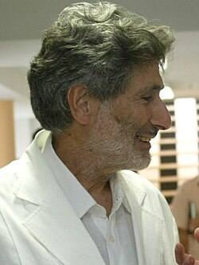
Edward Said
Geboren in Jerusalem, aufgewachsen in Kairo, lehrte Said jahrzehntelang Vergleichende Literaturwissenschaft an der Columbia University in New York. Sein Hauptwerk „Orientalism“ (1978) gilt als Gründungstext der postkolonialen Studien: Es analysiert, wie westliche Wissenschaft und Literatur ein verzerrtes, herrschaftsdienliches Bild „des Orients“ konstruierten. Mit „The Question of Palestine“ (1979) legte er die erste große englischsprachige Gesamtdarstellung der palästinensischen Sache für ein westliches Publikum vor. Von 1977 bis 1991 gehörte er dem Palästinensischen Nationalrat an, wurde später aber zum scharfen Kritiker der Oslo-Abkommen, die er für strukturell ungerecht hielt; er trat stets für eine Lösung ein, die beiden Völkern gleiche Rechte gibt. 1999 gründete er gemeinsam mit dem israelischen Dirigenten Daniel Barenboim das West-Eastern Divan Orchestra, in dem junge arabische und israelische Musiker zusammen spielen. Seine Autobiografie „Out of Place“ (1999) beschreibt das Lebensgefühl des Exils. Said starb 2003 in New York an Leukämie.
Foto: Barenboim-Said Akademie gGmbH, CC0 1.0, via Wikimedia Commons
Mahmud Darwisch
Der Nationaldichter der Palästinenser wurde im galiläischen Dorf al-Birwa geboren, das 1948 entvölkert und zerstört wurde; die Familie floh in den Libanon und kehrte illegal zurück. Früh berühmt machte ihn das Gedicht „Personalausweis“ (1964) mit der trotzigen Zeile „Schreib auf: Ich bin Araber“. „Araber“ steht hier für das Wort, das die israelische Verwaltung in seine Papiere schrieb — Darwisch nahm es auf und wandte es gegen sie. Nach Jahren von Hausarrest und Haft in Israel ging er 1970 ins Exil (Kairo, Beirut, Paris, Amman, Ramallah). Er verfasste 1988 den Text der Unabhängigkeitserklärung Palästinas und trat 1993 aus Protest gegen die Oslo-Abkommen aus dem PLO-Exekutivkomitee aus. Sein Werk — mehr als 30 Gedichtbände, darunter „Belagerungszustand“ (2002) — verband das palästinensische Schicksal mit universellen Themen von Verlust, Liebe und Heimat und wurde in Dutzende Sprachen übersetzt. Darwisch starb 2008 nach einer Herzoperation in Houston und erhielt ein Staatsbegräbnis in Ramallah.
Ghassan Kanafani
Der in Akka geborene Schriftsteller und Journalist floh 1948 mit seiner Familie in den Libanon und nach Syrien und arbeitete später als Lehrer und Redakteur in Kuwait und Beirut. Seine Novelle „Männer in der Sonne“ (1962) — drei palästinensische Flüchtlinge ersticken in einem Tanklastwagen auf dem Weg nach Kuwait — gilt als Schlüsselwerk der modernen arabischen Literatur; ebenso einflussreich wurde „Rückkehr nach Haifa“ (1969). Kanafani war zugleich führendes Mitglied und Sprecher der marxistischen Volksfront für die Befreiung Palästinas (PFLP) und Chefredakteur ihres Wochenblatts al-Hadaf — Literatur und politische Militanz gehörten bei ihm untrennbar zusammen. Am 8. Juli 1972 wurde er in Beirut durch eine Autobombe getötet, die dem israelischen Auslandsgeheimdienst Mossad zugeschrieben wird; mit ihm starb seine 17-jährige Nichte Lamees. Die Tötung galt als Vergeltung für das Massaker am Flughafen Lod (Mai 1972, 26 Tote), das die PFLP mitorganisiert hatte; eine direkte Beteiligung Kanafanis an dem Anschlag ist nicht belegt.
Fadwa Tuqan
Die „Dichterin Palästinas“ entstammte einer einflussreichen Familie in Nablus und musste die Schule als Mädchen früh verlassen; ihr Bruder, der Dichter Ibrahim Tuqan, unterrichtete sie privat und führte sie an die Poesie heran. Sie begann mit klassischen Formen und wurde zu einer Pionierin des freien Verses in der arabischen Lyrik; nach 1967 wandte sich ihr Werk stärker der Besatzungserfahrung zu. Dem israelischen General Mosche Dajan wird der Ausspruch zugeschrieben, ihre Gedichte seien gefährlicher als feindliche Kämpfer. Ihre Autobiografie „A Mountainous Journey“ (1985) schildert zugleich den Kampf einer Frau um Bildung und Selbstbestimmung in einer patriarchalen Gesellschaft. Tuqan starb 2003 in Nablus.
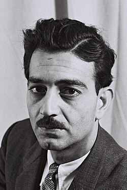
Emile Habibi
Der in Haifa geborene Schriftsteller und Politiker blieb 1948 in Israel und wurde zu einer der prägenden Stimmen der palästinensischen Minderheit dort. Für die Kommunistische Partei (Maki, später Rakah) saß er von 1951 bis 1972 mit Unterbrechung in der Knesset. Sein satirischer Roman „Der Peptimist“ (1974) über einen palästinensischen Bürger Israels zwischen Anpassung und Widerstand ist ein Klassiker der modernen arabischen Literatur. Habibi erhielt 1990 den al-Quds-Preis der PLO und 1992 als erster arabischer Autor den Israel-Preis für Literatur — dass er beide annahm, trug ihm Kritik von beiden Seiten ein, entsprach aber seinem Credo der Koexistenz. Auf seinen Wunsch trägt sein Grabstein in Haifa die Aufschrift, dass er in Haifa geblieben ist. Er starb 1996.
Foto: Théodore Brauner, Public Domain, via Wikimedia Commons
Naji al-Ali
Der Karikaturist wurde im galiläischen Dorf asch-Schadschara geboren und wuchs nach 1948 im Flüchtlingslager Ain al-Hilweh im Libanon auf. Seine Figur Handala — ein barfüßiger, zehnjähriger Flüchtlingsjunge, der dem Betrachter den Rücken zukehrt — wurde zum bekanntesten Symbol des palästinensischen Exils. Al-Ali zeichnete über 40.000 Karikaturen und attackierte darin gleichermaßen Israel, die arabischen Regime und die PLO-Führung um Arafat, was ihm zahlreiche Feinde einbrachte. Am 22. Juli 1987 wurde er in London auf offener Straße in den Nacken geschossen; er starb am 29. August 1987. Die Täter wurden nie ermittelt — Verdächtigungen richteten sich sowohl gegen PLO-Kreise als auch gegen den Mossad; die PLO bestritt jede Beteiligung. Scotland Yard nahm die Ermittlungen 2017 wieder auf, bislang ohne Anklage.
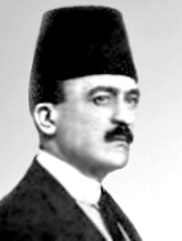
Khalil Sakakini
Der Jerusalemer Pädagoge und Essayist gilt als bedeutendster Erziehungsreformer Palästinas vor 1948. 1909 gründete er die Dusturiyya-Schule, die Schüler aller Religionen aufnahm und auf moderne Pädagogik ohne körperliche Strafen setzte; 1938 folgte das renommierte Nahda-College. Sakakini stand für einen säkularen, humanistischen arabischen Nationalismus und modernisierte den Arabischunterricht mit eigenen Lehrbüchern. Sein über 3.000 Seiten umfassendes Tagebuch (geführt ab 1907) ist eine der wichtigsten Quellen zum Alltags- und Geistesleben Jerusalems in spätosmanischer und Mandatszeit. 1948 musste er sein Haus im Jerusalemer Viertel Qatamon verlassen; er starb 1953 im Kairoer Exil.
Foto: unbekannt, Public Domain, via Wikimedia Commons
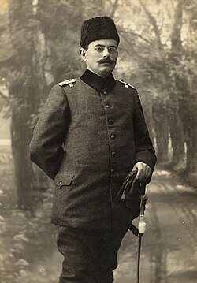
Tawfiq Canaan
Der in Beit Jala geborene Arzt leitete Krankenhäuser in Jerusalem, forschte international anerkannt zur Lepra und trug maßgeblich zu deren Zurückdrängung in Palästina bei. Parallel wurde er zum Pionier der palästinensischen Ethnografie: In Büchern wie „Aberglaube und Volksmedizin im Lande der Bibel“ (1914) und „Mohammedan Saints and Sanctuaries in Palestine“ (1927) sowie über 50 Aufsätzen dokumentierte er Volksglauben, Heiligenschreine und Heilpraktiken. Seine ab 1905 aufgebaute Sammlung von rund 1.400 Amuletten und Talismanen — heute an der Universität Birzeit — ist ein einzigartiges Archiv der materiellen Volkskultur Palästinas. Der Soziologe Salim Tamari nannte ihn einen „nativistischen Ethnografen“, der mit seiner Forschung die kulturelle Eigenständigkeit Palästinas belegen wollte. 1948 verlor Canaan Haus und Bibliothek in Jerusalem; er starb 1964.
Foto: Garabed Krikorian, Public Domain, via Wikimedia Commons
Karimeh Abbud
Die in Bethlehem geborene Tochter eines lutherischen Pastors gilt als erste professionelle Fotografin Palästinas und der arabischen Welt. Ihre erste Kamera erhielt sie 1913; ab den frühen 1930er Jahren betrieb sie Studios u. a. in Nazareth, Bethlehem und Haifa und warb in der Presse als „einzige nationale Fotografin“. Gerade Frauen ließen sich bevorzugt von ihr porträtieren; daneben fotografierte sie Landschaften, Städte und Alltagsszenen. Ihr wiederentdecktes Archiv dokumentiert das Palästina der 1920er bis 1940er Jahre — ein visuelles Gegengewicht zur Behauptung, das Land sei vor 1948 „leer“ gewesen. Nach heute vorherrschender Forschung (Issam Nassar, Ahmad Mrowat) starb sie 1940 in Bethlehem; ältere Angaben nannten die Lebensdaten 1896–1955.
Foto (Selbstporträt): Karimeh Abbud, Public Domain, via Wikimedia Commons
May Ziade
Die in Nazareth geborene Schriftstellerin — Tochter eines libanesischen Vaters und einer palästinensischen Mutter — wurde zu einer Schlüsselfigur der arabischen Literaturmoderne (Nahda) und der frühen Frauenbewegung. Ab 1908 lebte sie in Kairo, schrieb Essays, Lyrik und Literaturkritik in mehreren Sprachen und führte ab 1913 fast zwei Jahrzehnte lang ihren berühmten Dienstagssalon, in dem die wichtigsten Intellektuellen Ägyptens verkehrten. Legendär ist ihre 19-jährige Brieffreundschaft mit dem Dichter Khalil Gibran, dem sie nie persönlich begegnete. In ihren späten Jahren ließen Verwandte sie zeitweise gegen ihren Willen in eine psychiatrische Anstalt im Libanon einweisen; eine Kampagne von Intellektuellen erreichte ihre Freilassung. Sie starb 1941 vereinsamt in Kairo.
Foto: unbekannt (vor 1941), Public Domain, via Wikimedia Commons
Politik und ZeitgeschichtePolitik und Zeitgeschichte
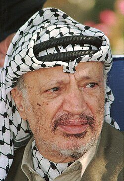
Yasser Arafat
Arafat wurde laut Geburtsurkunde am 4. August 1929 in Kairo geboren (er selbst nannte Jerusalem), studierte dort Bauingenieurwesen und gründete Ende der 1950er Jahre in Kuwait die Fatah mit. 1969 übernahm er den Vorsitz der PLO, die unter seiner Führung jahrzehntelang bewaffneten Kampf führte — einschließlich Anschlägen von PLO-Fraktionen auf Zivilisten —, zugleich erreichte er 1974 mit seiner UN-Rede die internationale Anerkennung der PLO als Vertretung der Palästinenser. 1988 erkannte er im Namen der PLO die UN-Resolution 242 an und erklärte den Verzicht auf Terrorismus; 1993 unterzeichnete er mit Israels Premier Rabin die Oslo-Prinzipienerklärung, wofür er 1994 gemeinsam mit Rabin und Peres den Friedensnobelpreis erhielt. 1996 wurde er zum Präsidenten der Palästinensischen Autonomiebehörde gewählt, regierte jedoch zunehmend autokratisch; Korruption im Apparat ist gut dokumentiert. Nach dem Scheitern von Camp David 2000 und dem Ausbruch der Zweiten Intifada hielt ihn Israel ab 2002 faktisch in seinem Amtssitz in Ramallah fest. Er starb am 11. November 2004 in einem Militärkrankenhaus bei Paris; die Todesursache ist umstritten: Ein Schweizer Labor fand 2013 erhöhte Polonium-Werte und hielt eine Vergiftung für „moderat gestützt“, französische und russische Untersuchungen kamen zu natürlichen Ursachen, das französische Verfahren wurde 2015 eingestellt. Sein Erbe bleibt zwiespältig: für viele Palästinenser Symbol der nationalen Bewegung, für Kritiker verantwortlich für Gewalt und verpasste Chancen.
Foto: Gideon Markowiz, Dan-Hadani-Archiv, CC BY 4.0, via Wikimedia Commons
Hanan Aschrawi
Die in Nablus geborene, in Ramallah aufgewachsene Anglistin promovierte an der University of Virginia und baute die Anglistik-Fakultät der Universität Birzeit auf. International bekannt wurde sie 1991 als eloquente Sprecherin der palästinensischen Delegation bei der Madrider Friedenskonferenz — als erste Frau in dieser Rolle im Nahost-Friedensprozess. Sie war Ministerin für Hochschulbildung der Autonomiebehörde (1996–1998), gründete 1998 die Organisation MIFTAH zur Förderung von Demokratie und Dialog und wurde 2009 als erste Frau in das PLO-Exekutivkomitee gewählt. 2020 trat sie aus Protest zurück und forderte eine grundlegende Erneuerung des politischen Systems, einschließlich längst überfälliger Wahlen. Aschrawi steht für eine säkulare, rechtsstaatlich orientierte Strömung der palästinensischen Politik und ist eine scharfe Kritikerin sowohl der israelischen Besatzung als auch innerpalästinensischer Missstände.
Foto: Frankie Fouganthin, CC BY-SA 4.0, via Wikimedia Commons
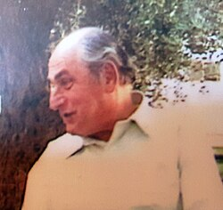
Faisal Husseini
Der Sohn des 1948 gefallenen Kommandeurs Abd al-Qadir al-Husseini wurde in Bagdad geboren und stieg zur wichtigsten palästinensischen Führungsfigur Ostjerusalems auf. 1979 gründete er die Arab Studies Society; als einer der Anführer der Ersten Intifada saß er mehrfach in israelischer Haft, wandelte sich aber zum entschiedenen Befürworter einer Verhandlungslösung. Er bereitete die palästinensische Beteiligung an der Madrider Konferenz 1991 mit vor und machte das Orient House in Ostjerusalem zum faktischen politischen Hauptquartier der Palästinenser in der Stadt, wo er trotz israelischer Einwände ausländische Diplomaten empfing. Im PLO-Exekutivkomitee war er für Jerusalem zuständig. Husseini starb am 31. Mai 2001 an einem Herzinfarkt während eines Besuchs in Kuwait; das Orient House wurde kurz darauf von Israel geschlossen.
Foto: Moshe Amirav, CC BY-SA 4.0, via Wikimedia Commons
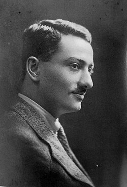
Musa Alami
Der Jerusalemer Jurist aus angesehener Familie studierte in Cambridge und diente der britischen Mandatsverwaltung als Kronanwalt. In den 1940er Jahren galt der parteilose Vermittler vielen als informeller Repräsentant der Palästinenser; 1944 vertrat er Palästina bei den Gründungsgesprächen der Arabischen Liga. Nach der Nakba gründete er 1949 bei Jericho die Arab Development Society: Auf zuvor als unfruchtbar geltendem Boden ließ er erfolgreich nach Wasser bohren und baute eine Musterfarm mit Waisenhaus und Berufsschule für Flüchtlingskinder auf. Sein Buch „Ibrat Filastin“ („Die Lehre aus Palästina“, 1949) war eine der ersten selbstkritischen arabischen Analysen der Niederlage von 1948. Alami, oft „der letzte Palästinenser“ der alten Notabelngeneration genannt, starb 1984 in Amman.
Foto: unbekannt (1918), Public Domain, via Wikimedia Commons
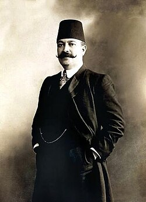
Ruhi al-Khalidi
Der Gelehrte und Diplomat aus der Jerusalemer Familie al-Khalidi — aus der später auch der Historiker Rashid Khalidi hervorging — lehrte in Paris, diente als osmanischer Generalkonsul in Bordeaux und wurde 1908 als Abgeordneter Jerusalems ins osmanische Parlament gewählt, dessen Vizepräsident er 1911 wurde. Im Parlament warnte er wiederholt vor den Folgen zionistischer Einwanderung und der Landverkäufe für die Palästinenser — er gehört damit zu den frühesten dokumentierten Stimmen des palästinensischen Widerstands gegen das zionistische Projekt auf parlamentarischer Ebene. Bemerkenswert ist sein Bemühen um Sachkenntnis: Er studierte hebräische Texte und besuchte jüdische Einrichtungen, um den Zionismus zu verstehen. Sein unvollendetes Manuskript über Geschichte und Ziele des Zionismus gilt als erste wissenschaftliche Untersuchung des Themas in arabischer Sprache. Er starb 1913 mit nur 49 Jahren in Istanbul.
Foto: unbekannt, Public Domain, via Wikimedia Commons
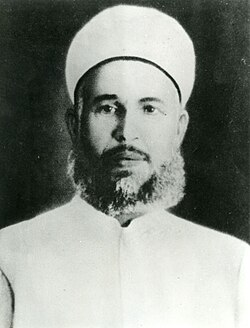
Izz ad-Din al-Qassam
Der aus Dschabla in Syrien stammende islamische Prediger floh in den 1920er Jahren vor einem französischen Todesurteil (wegen seines Widerstands gegen die Mandatsmacht) nach Haifa, wo er Imam der Istiqlal-Moschee wurde und vor allem unter verarmten Landflüchtigen wirkte. Er verband religiöse Erweckungspredigt mit dem Aufruf zum bewaffneten Kampf gegen die britische Herrschaft und die zionistische Besiedlung und baute ab Anfang der 1930er Jahre geheime bewaffnete Zellen auf; diesen werden Anschläge zugerechnet, bei denen auch jüdische Zivilisten getötet wurden. Im November 1935 stellte die britische Polizei ihn und eine kleine Gruppe Anhänger bei Ya'bad nahe Dschenin; al-Qassam fiel am 20. November 1935 im Feuergefecht. Sein Tod machte ihn schlagartig zur Märtyrerfigur und trug wesentlich zum Ausbruch des Arabischen Aufstands von 1936–1939 bei. Bis heute wirkt sein Name fort: Die Kassam-Brigaden (der militärische Arm der Hamas) und die Kassam-Raketen sind nach ihm benannt — seine historische Gestalt ist von dieser späteren Vereinnahmung zu unterscheiden.
Foto: unbekannt, Public Domain, via Wikimedia Commons
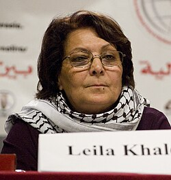
Leila Chaled
Die in Haifa geborene, 1948 mit ihrer Familie in den Libanon geflohene Aktivistin schloss sich der PFLP an und wurde durch zwei Flugzeugentführungen international bekannt: 1969 die Entführung des TWA-Flugs 840 nach Damaskus (die Passagiere kamen frei, das Cockpit wurde nach der Evakuierung gesprengt) und 1970 der gescheiterte Versuch, den El-Al-Flug 219 zu entführen, bei dem ihr Komplize erschossen und sie in London festgenommen wurde; Ende September 1970 kam sie im Austausch gegen Geiseln anderer PFLP-Entführungen frei. Das ikonische Foto der jungen Frau mit Kufiya und Gewehr machte sie zu einer viel reproduzierten Symbolfigur — die Entführungen ziviler Verkehrsflugzeuge bleiben gleichwohl Gewaltakte gegen Unbeteiligte; die PFLP wird von EU und USA als Terrororganisation gelistet. Chaled blieb PFLP-Funktionärin und Mitglied des Palästinensischen Nationalrats und lebt in Jordanien; wegen ihrer Vergangenheit wurden ihr wiederholt Einreisen und Auftritte in westlichen Ländern verweigert.
Foto: Sebastian Baryli, CC BY 2.0, via Wikimedia Commons
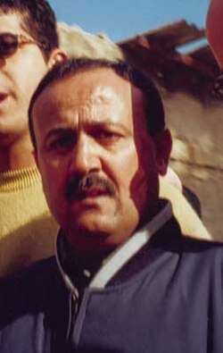
Marwan Barghuti
Der aus Kobar bei Ramallah stammende Fatah-Politiker war Studentenführer in Birzeit, wurde während der Ersten Intifada deportiert und kehrte nach Oslo zurück; 1996 wurde er ins Palästinensische Parlament gewählt und stieg zum Generalsekretär der Fatah im Westjordanland auf. Zunächst Befürworter des Oslo-Prozesses, wurde er während der Zweiten Intifada zu einer Führungsfigur des Aufstands; Israel machte ihn für Anschläge der Fatah-nahen al-Aqsa-Märtyrerbrigaden mitverantwortlich. 2002 festgenommen, verurteilte ihn ein israelisches Zivilgericht 2004 wegen fünffachen Mordes in drei Anschlägen zu fünfmal lebenslanger Haft plus 40 Jahren; Barghuti erkannte das Gericht nicht an und verweigerte eine Verteidigung — er bestreitet die persönliche Verantwortung für die Taten. In Umfragen ist er seit Jahren der mit Abstand populärste Kandidat für die palästinensische Präsidentschaft und gilt vielen als mögliche Integrationsfigur über die Lager hinweg, zumal er sich wiederholt für eine Zwei-Staaten-Lösung ausgesprochen hat. 2026 erhielt er aus der Haft heraus die meisten Stimmen bei der Wahl zum Fatah-Zentralkomitee; Berichte über verschärfte Isolationshaft und ein von israelischen Medien verbreitetes Video, das Polizeiminister Ben-Gvir bei einer Drohkonfrontation in seiner Zelle zeigt, sorgten international für Kritik.
Foto: BDalim (2001), CC BY-SA 3.0, via Wikimedia Commons
Die Historiker der Palästinaforschung
Fünfzehn Historikerinnen und Historiker, deren Arbeiten die Quellenlage zu Palästina begründet haben — darunter die israelischen „Neuen Historiker“, die die Staatsgründungserzählung anhand israelischer Archive selbst revidiert haben.
Die PalästinaforschungHistoriker der Palästinaforschung
Was die „Neuen Historiker“ veränderten
Ende der 1980er Jahre erschütterte eine Gruppe israelischer Forscher — Simha Flapan, Benny Morris, Ilan Pappé und Avi Shlaim — die offizielle israelische Geschichtsschreibung zu 1948. Möglich wurde dies vor allem durch die Öffnung israelischer und britischer Archive nach Ablauf der 30-Jahres-Sperrfristen ab Ende der 1970er Jahre: Erstmals ließen sich die Gründungsjahre Israels anhand interner Dokumente statt Memoiren und offizieller Darstellungen untersuchen. Zentrale Befunde: Die palästinensischen Flüchtlinge von 1948 verließen ihre Orte überwiegend nicht „freiwillig auf arabischen Befehl“, sondern durch Krieg, Vertreibung und Furcht; Israel war den arabischen Armeen in den meisten Kriegsphasen nicht hoffnungslos unterlegen; es gab Geheimkontakte mit Transjordanien; und nach 1948 wurden arabische Friedenssondierungen auch von israelischer Seite ausgeschlagen. Damit bestätigten israelische Archivquellen viele Kernaussagen, die palästinensische Chronisten und Historiker wie Aref al-Aref und Walid Khalidi seit Jahrzehnten vertreten hatten — die politischen Schlussfolgerungen der einzelnen „Neuen Historiker“ gingen und gehen allerdings weit auseinander.
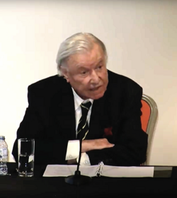
Walid Khalidi
Der in Jerusalem geborene, in Oxford ausgebildete Historiker prägte die palästinensische Geschichtswissenschaft wie kein Zweiter. Schon 1959/1961 widerlegte er in Aufsätzen — darunter „Plan Dalet: Master Plan for the Conquest of Palestine“ — die These, die Palästinenser seien 1948 auf Anweisung arabischer Führer geflohen, und lenkte den Blick auf die zionistischen Militärpläne. 1963 gründete er in Beirut das Institute for Palestine Studies mit, das führende Forschungsinstitut zur Palästinafrage, dessen Generalsekretär er bis 2016 blieb. Sein monumentales Referenzwerk „All That Remains“ (1992) dokumentiert Dorf für Dorf die über 400 im Krieg von 1948 entvölkerten palästinensischen Ortschaften; der Fotoband „Before Their Diaspora“ (1984) zeigt das palästinensische Leben vor 1948. Khalidi lehrte u. a. in Oxford, an der Amerikanischen Universität Beirut und in Harvard. Er starb am 8. März 2026 im Alter von 100 Jahren.
Foto: SOAS University of London, CC0 1.0, via Wikimedia Commons
 From Haven to Conquest: Readings in Zionism and the Palestine Problem until 1948 (Hrsg.)From Haven to Conquest: Readings in Zionism and the Palestine Problem until 1948 (Hrsg.)
From Haven to Conquest: Readings in Zionism and the Palestine Problem until 1948 (Hrsg.)From Haven to Conquest: Readings in Zionism and the Palestine Problem until 1948 (Hrsg.) Before Their Diaspora: A Photographic History of the Palestinians, 1876–1948Before Their Diaspora: A Photographic History of the Palestinians, 1876–1948
Before Their Diaspora: A Photographic History of the Palestinians, 1876–1948Before Their Diaspora: A Photographic History of the Palestinians, 1876–1948 All That Remains: The Palestinian Villages Occupied and Depopulated by Israel in 1948 (Hrsg.)All That Remains: The Palestinian Villages Occupied and Depopulated by Israel in 1948 (Hrsg.)
All That Remains: The Palestinian Villages Occupied and Depopulated by Israel in 1948 (Hrsg.)All That Remains: The Palestinian Villages Occupied and Depopulated by Israel in 1948 (Hrsg.) Palestine Reborn (Essaysammlung, Einleitung Albert Hourani)Palestine Reborn (Essaysammlung, Einleitung Albert Hourani)
Palestine Reborn (Essaysammlung, Einleitung Albert Hourani)Palestine Reborn (Essaysammlung, Einleitung Albert Hourani)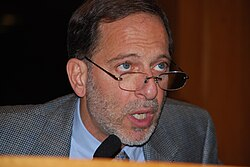
Rashid Khalidi
Der in New York geborene Historiker aus der Jerusalemer Familie al-Khalidi lehrte bis zu seiner Emeritierung 2024 als Edward-Said-Professor für moderne arabische Studien an der Columbia University und war lange Mitherausgeber des Journal of Palestine Studies. Mit „Palestinian Identity“ (1997) legte er die Standardstudie zur Entstehung des palästinensischen Nationalbewusstseins vor. Sein Hauptwerk „The Hundred Years' War on Palestine“ (2020) deutet den Konflikt als hundertjährigen Krieg gegen die Palästinenser: eine settler-koloniale Eroberung in Etappen, jeweils gestützt von Großmächten — von der Balfour-Deklaration 1917 bis in die Gegenwart —, wobei er zugleich Fehler der palästinensischen Führungen benennt. Er verbindet Archivarbeit mit Familiendokumenten aus der Khalidi-Bibliothek in Jerusalem. Khalidi beriet 1991–1993 die palästinensische Delegation bei den Verhandlungen von Madrid und Washington.
Foto: Thomas Good/NLN, CC BY-SA 4.0, via Wikimedia Commons
 Palestinian Identity: The Construction of Modern National ConsciousnessPalestinian Identity: The Construction of Modern National Consciousness
Palestinian Identity: The Construction of Modern National ConsciousnessPalestinian Identity: The Construction of Modern National Consciousness The Iron Cage: The Story of the Palestinian Struggle for StatehoodThe Iron Cage: The Story of the Palestinian Struggle for Statehood
The Iron Cage: The Story of the Palestinian Struggle for StatehoodThe Iron Cage: The Story of the Palestinian Struggle for Statehood Brokers of Deceit: How the U.S. Has Undermined Peace in the Middle EastBrokers of Deceit: How the U.S. Has Undermined Peace in the Middle East
Brokers of Deceit: How the U.S. Has Undermined Peace in the Middle EastBrokers of Deceit: How the U.S. Has Undermined Peace in the Middle East The Hundred Years' War on Palestine: A History of Settler Colonialism and Resistance, 1917–2017The Hundred Years' War on Palestine: A History of Settler Colonialism and Resistance, 1917–2017DE
The Hundred Years' War on Palestine: A History of Settler Colonialism and Resistance, 1917–2017The Hundred Years' War on Palestine: A History of Settler Colonialism and Resistance, 1917–2017DENur Masalha
Der aus Galiläa stammende palästinensische Historiker (lange an der St Mary's University London, danach SOAS) wurde mit „Expulsion of the Palestinians: The Concept of 'Transfer' in Zionist Political Thought, 1882–1948“ (1992) bekannt. Seine Kernthese: Die Idee eines „Transfers“ — also der Verdrängung der palästinensischen Bevölkerung — war kein Randphänomen, sondern zieht sich als ernsthaft erwogene Option durch das zionistische Denken von den Anfängen bis 1948; die Nakba sei daher nicht als bloßes Kriegsereignis zu verstehen. Damit ging er deutlich über Benny Morris hinaus, mit dem er eine langjährige Fachkontroverse führte. Spätere Werke wie „The Palestine Nakba“ (2012) und „Palestine: A Four Thousand Year History“ (2018) behandeln Erinnerungskultur und die lange vormoderne Geschichte des Landes. Masalha gab zudem das Fachjournal Holy Land Studies heraus.
Foto: Arab World Books, CC BY 4.0, via Wikimedia Commons
 Expulsion of the Palestinians: The Concept of „Transfer“ in Zionist Political Thought, 1882–1948Expulsion of the Palestinians: The Concept of „Transfer“ in Zionist Political Thought, 1882–1948
Expulsion of the Palestinians: The Concept of „Transfer“ in Zionist Political Thought, 1882–1948Expulsion of the Palestinians: The Concept of „Transfer“ in Zionist Political Thought, 1882–1948 The Bible and Zionism: Invented Traditions, Archaeology and Post-Colonialism in Palestine-IsraelThe Bible and Zionism: Invented Traditions, Archaeology and Post-Colonialism in Palestine-Israel
The Bible and Zionism: Invented Traditions, Archaeology and Post-Colonialism in Palestine-IsraelThe Bible and Zionism: Invented Traditions, Archaeology and Post-Colonialism in Palestine-Israel The Palestine Nakba: Decolonising History, Narrating the Subaltern, Reclaiming MemoryThe Palestine Nakba: Decolonising History, Narrating the Subaltern, Reclaiming Memory
The Palestine Nakba: Decolonising History, Narrating the Subaltern, Reclaiming MemoryThe Palestine Nakba: Decolonising History, Narrating the Subaltern, Reclaiming Memory Palestine: A Four Thousand Year HistoryPalestine: A Four Thousand Year History
Palestine: A Four Thousand Year HistoryPalestine: A Four Thousand Year History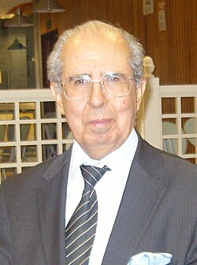
Salman Abu Sitta
Der im Bezirk Beerscheba geborene Forscher wurde 1948 als Kind mit seiner Familie vertrieben und wuchs als Flüchtling in Gaza und Kairo auf; er promovierte als Bauingenieur in London. Als Gründer und Präsident der Palestine Land Society widmete er sich der kartografischen Totalrekonstruktion Palästinas: Sein „Atlas of Palestine 1917–1966“ (2010) und Folgeatlanten dokumentieren auf Basis von Katasterdaten, Luftbildern und Mandatskarten Landbesitz, Ortschaften und deren Entvölkerung. Sein zweiter Schwerpunkt ist das Rückkehrrecht der Flüchtlinge, dessen praktische Umsetzbarkeit er in Studien durchrechnete. Kritiker halten seine Rückkehr-Szenarien für politisch unrealistisch; als Dokumentationsleistung gilt sein Kartenwerk gleichwohl als unersetzlich. Seine Memoiren „Mapping My Return“ erschienen 2016.
Foto: Wisam Zaqut, CC BY-SA 3.0, via Wikimedia Commons
 The Palestinian Nakba 1948: The Register of Depopulated Localities in PalestineThe Palestinian Nakba 1948: The Register of Depopulated Localities in Palestine
The Palestinian Nakba 1948: The Register of Depopulated Localities in PalestineThe Palestinian Nakba 1948: The Register of Depopulated Localities in Palestine Atlas of Palestine, 1948Atlas of Palestine, 1948
Atlas of Palestine, 1948Atlas of Palestine, 1948 Atlas of Palestine, 1917–1966Atlas of Palestine, 1917–1966
Atlas of Palestine, 1917–1966Atlas of Palestine, 1917–1966 Mapping My Return: A Palestinian MemoirMapping My Return: A Palestinian Memoir
Mapping My Return: A Palestinian MemoirMapping My Return: A Palestinian Memoir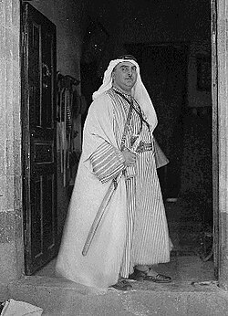
Aref al-Aref
Der Jerusalemer Journalist, Verwaltungsbeamter und Historiker diente im osmanischen Heer, gab nach 1918 die nationalistische Zeitung Suriyya al-Dschanubiyya („Südsyrien“) heraus und bekleidete unter dem britischen Mandat und später unter Jordanien hohe Verwaltungsämter, darunter das des Bürgermeisters von Ost-Jerusalem (1950–1955). Sein Hauptwerk ist die sechsbändige Chronik „al-Nakba“ (1956–1961), für die er als unmittelbarer Zeitzeuge Tag für Tag Ereignisse, Ortsschicksale und Opferzahlen des Krieges von 1948 zusammentrug — bis heute eine der wichtigsten arabischen Quellensammlungen zur Nakba. Daneben verfasste er Stadtgeschichten Jerusalems, Gazas und Beerschebas sowie frühe ethnografische Studien über die Beduinen des Negev. Er starb 1973 in al-Bireh.
Foto: American Colony Photo Dept. (1934–39), Public Domain, via Wikimedia Commons
Constantin Zureiq
Der syrische Historiker — geboren in Damaskus, griechisch-orthodox, Professor und zeitweise Rektor an der Amerikanischen Universität Beirut — gehört als Vordenker des arabischen Nationalismus in diese Reihe, weil er den zentralen Begriff prägte: In seiner noch während des Krieges im Sommer 1948 verfassten Schrift „Ma'na al-Nakba“ („Die Bedeutung der Katastrophe“) nannte er die arabische Niederlage erstmals „Nakba“ — der Begriff ging von dort in den allgemeinen Sprachgebrauch über. Das schmale Buch war zugleich eine schonungslose Selbstkritik: Zureiq machte die Rückständigkeit und Uneinigkeit der arabischen Staaten für die Niederlage mitverantwortlich und forderte eine grundlegende Modernisierung der arabischen Gesellschaften. Nach 1967 setzte er die Analyse mit „Die Bedeutung der Katastrophe erneut“ fort. Zureiq starb 2000 in Beirut.
Beshara Doumani
Der palästinensisch-amerikanische Historiker hatte an der Brown University die erste Professur für Palästina-Studien in den USA inne (Mahmoud-Darwish-Lehrstuhl) und war 2021–2023 Präsident der Universität Birzeit. Sein Hauptwerk „Rediscovering Palestine: Merchants and Peasants in Jabal Nablus, 1700–1900“ (1995) verschob den Fokus der Forschung: weg von Diplomatie und Konflikt, hin zur Sozial- und Wirtschaftsgeschichte der Palästinenser selbst — erzählt über Handelsnetze, Familien und die „Warenbiografien“ von Baumwolle, Olivenöl und Seife in Nablus. Sein programmatischer Anspruch: die Palästinenser in die Geschichte einschreiben, statt sie nur als Objekt des Konflikts zu behandeln. Mit „Family Life in the Ottoman Mediterranean“ (2017) folgte eine vergleichende Sozialgeschichte von Familie und Eigentum.
 Rediscovering Palestine: Merchants and Peasants in Jabal Nablus, 1700–1900Rediscovering Palestine: Merchants and Peasants in Jabal Nablus, 1700–1900
Rediscovering Palestine: Merchants and Peasants in Jabal Nablus, 1700–1900Rediscovering Palestine: Merchants and Peasants in Jabal Nablus, 1700–1900 Academic Freedom after September 11 (Hrsg.)Academic Freedom after September 11 (Hrsg.)
Academic Freedom after September 11 (Hrsg.)Academic Freedom after September 11 (Hrsg.) Family Life in the Ottoman Mediterranean: A Social HistoryFamily Life in the Ottoman Mediterranean: A Social History
Family Life in the Ottoman Mediterranean: A Social HistoryFamily Life in the Ottoman Mediterranean: A Social HistorySherene Seikaly
Die palästinensisch-amerikanische Historikerin lehrt an der University of California, Santa Barbara, und ist Mitgründerin des Online-Fachmagazins Jadaliyya. Ihr Buch „Men of Capital: Scarcity and Economy in Mandate Palestine“ (2016) untersucht die bislang wenig beachtete palästinensische Unternehmer- und Kapitalistenschicht der 1930er/40er Jahre: Palästinenser erscheinen hier nicht nur als Bauern und Flüchtlinge, sondern als Akteure einer modernen Wirtschafts- und Konsumgesellschaft mit eigenen Zukunftsentwürfen. Damit steht sie für eine jüngere Generation der Palästinaforschung, die Wirtschafts-, Körper- und Alltagsgeschichte in den Mittelpunkt rückt. Ihr aktuelles Projekt verfolgt anhand ihrer eigenen Familiengeschichte Wege von Kapital und Vertreibung zwischen Amerika, Beirut und Palästina.

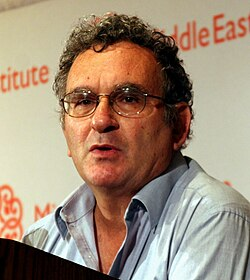
Benny Morris
Der israelische Historiker (lange Ben-Gurion-Universität) wurde mit „The Birth of the Palestinian Refugee Problem, 1947–1949“ (1988, erweitert 2004) zum bekanntesten der Neuen Historiker. Auf Basis israelischer Archive dokumentierte er, dass die rund 700.000 palästinensischen Flüchtlinge überwiegend durch Militäroperationen, Vertreibungen, Massaker und Furcht vertrieben wurden — und widerlegte damit die offizielle israelische Version einer freiwilligen Flucht; zugleich verneint er einen zentralen, vorab beschlossenen Vertreibungsplan: Das Flüchtlingsproblem sei aus dem Krieg entstanden, nicht am Reißbrett geplant. Seine differenzierte Position wird von beiden Seiten angegriffen — palästinensische Forscher wie Masalha halten ihm vor, die Transfer-Idee zu verharmlosen, israelische Kritiker das Gegenteil. Für Aufsehen sorgte 2004 ein Haaretz-Interview, in dem Morris die Vertreibungen von 1948 rückblickend als aus seiner Sicht unvermeidlich rechtfertigte und Ben-Gurion vorwarf, die „Arbeit“ nicht vollendet zu haben — Aussagen, die breite Empörung auslösten und seine Rolle als politisch Konservativer unter den Archiv-Revisionisten zementierten. Weitere Hauptwerke sind „Righteous Victims“ (1999) und „1948“ (2008).
Foto: Aude, CC BY-SA 3.0, via Wikimedia Commons
 The Birth of the Palestinian Refugee Problem, 1947–1949 (Erstausgabe)The Birth of the Palestinian Refugee Problem, 1947–1949 (Erstausgabe)
The Birth of the Palestinian Refugee Problem, 1947–1949 (Erstausgabe)The Birth of the Palestinian Refugee Problem, 1947–1949 (Erstausgabe) The Birth of the Palestinian Refugee Problem RevisitedThe Birth of the Palestinian Refugee Problem RevisitedDE
The Birth of the Palestinian Refugee Problem RevisitedThe Birth of the Palestinian Refugee Problem RevisitedDE Righteous Victims: A History of the Zionist-Arab Conflict, 1881–1999/2001Righteous Victims: A History of the Zionist-Arab Conflict, 1881–1999/2001
Righteous Victims: A History of the Zionist-Arab Conflict, 1881–1999/2001Righteous Victims: A History of the Zionist-Arab Conflict, 1881–1999/2001 1948: A History of the First Arab-Israeli War1948: A History of the First Arab-Israeli WarDE
1948: A History of the First Arab-Israeli War1948: A History of the First Arab-Israeli WarDE One State, Two States: Resolving the Israel/Palestine ConflictOne State, Two States: Resolving the Israel/Palestine Conflict
One State, Two States: Resolving the Israel/Palestine ConflictOne State, Two States: Resolving the Israel/Palestine ConflictIlan Pappé
Der in Haifa als Sohn deutsch-jüdischer Flüchtlinge geborene Historiker vertritt die weitestgehende Deutung von 1948: In „The Ethnic Cleansing of Palestine“ („Die ethnische Säuberung Palästinas“, 2006) argumentiert er, die Vertreibung der Palästinenser sei eine von der zionistischen Führung um Ben-Gurion geplante und mit dem Plan Dalet operationalisierte ethnische Säuberung gewesen. Das Buch wurde international einflussreich, ist fachlich aber umstritten; namentlich Benny Morris wirft Pappé tendenziöse Quellenarbeit und Fehler vor, während Unterstützer seine Gesamtdeutung durch die Quellenlage gedeckt sehen. Nach heftigen Konflikten an der Universität Haifa — unter anderem um seine Unterstützung von Boykottaufrufen und die Kontroverse um eine Abschlussarbeit zum Fall Tantura — ging Pappé 2007 an die University of Exeter, wo er das European Centre for Palestine Studies leitet. Er tritt offen für eine Ein-Staat-Lösung ein; sein Werk umfasst zudem u. a. „The Forgotten Palestinians“ (2011) über die Palästinenser in Israel.
Foto: Fjmustak, CC BY-SA 4.0, via Wikimedia Commons
 The Ethnic Cleansing of PalestineThe Ethnic Cleansing of PalestineDE
The Ethnic Cleansing of PalestineThe Ethnic Cleansing of PalestineDE A History of Modern Palestine: One Land, Two PeoplesA History of Modern Palestine: One Land, Two Peoples
A History of Modern Palestine: One Land, Two PeoplesA History of Modern Palestine: One Land, Two Peoples The Forgotten Palestinians: A History of the Palestinians in IsraelThe Forgotten Palestinians: A History of the Palestinians in IsraelDE
The Forgotten Palestinians: A History of the Palestinians in IsraelThe Forgotten Palestinians: A History of the Palestinians in IsraelDE Ten Myths About IsraelTen Myths About Israel
Ten Myths About IsraelTen Myths About Israel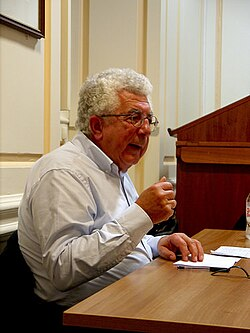
Avi Shlaim
Der in Bagdad geborene, aus einer irakisch-jüdischen Familie stammende Historiker kam 1950 als Kind nach Israel und lehrte später Jahrzehnte in Oxford, wo er heute Emeritus ist. „Collusion across the Jordan“ (1988) belegte aus den Archiven Geheimkontakte zwischen der Jewish Agency und König Abdallah von Transjordanien vor 1948. Sein Hauptwerk „The Iron Wall: Israel and the Arab World“ (2000, aktualisiert 2014) nimmt Jabotinskys Konzept der „eisernen Mauer“ zum Ausgangspunkt und argumentiert, Israels Politik habe fast durchgängig auf militärische Stärke statt auf ernsthafte Diplomatie gesetzt und dadurch Verständigungschancen vertan. In seinen Memoiren „Three Worlds: Memoirs of an Arab-Jew“ (2023) verarbeitet er die eigene Herkunft und vertritt u. a. die umstrittene These einer zionistischen Beteiligung an Anschlägen auf Juden in Bagdad 1950/51. Shlaim ist ein scharfer Kritiker israelischer Politik, betont aber stets die Unterscheidung zwischen Kritik und Delegitimierung der Person.
Foto: Mans2014, CC BY-SA 4.0, via Wikimedia Commons
 The Iron Wall: Israel and the Arab WorldThe Iron Wall: Israel and the Arab WorldDE
The Iron Wall: Israel and the Arab WorldThe Iron Wall: Israel and the Arab WorldDE Lion of Jordan: The Life of King Hussein in War and PeaceLion of Jordan: The Life of King Hussein in War and Peace
Lion of Jordan: The Life of King Hussein in War and PeaceLion of Jordan: The Life of King Hussein in War and Peace Israel and Palestine: Reappraisals, Revisions, RefutationsIsrael and Palestine: Reappraisals, Revisions, Refutations
Israel and Palestine: Reappraisals, Revisions, RefutationsIsrael and Palestine: Reappraisals, Revisions, Refutations Three Worlds: Memoirs of an Arab-JewThree Worlds: Memoirs of an Arab-Jew
Three Worlds: Memoirs of an Arab-JewThree Worlds: Memoirs of an Arab-Jew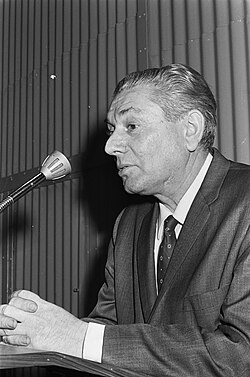
Simha Flapan
Der in Polen geborene, 1930 nach Palästina eingewanderte Publizist war Funktionär der linkszionistischen Mapam und Herausgeber der Verständigungszeitschrift New Outlook — kein Berufshistoriker, aber der eigentliche Anstoßgeber der neuen Richtung. Sein kurz nach seinem Tod erschienenes Buch „The Birth of Israel: Myths and Realities“ (1987) nahm sieben israelische Gründungsmythen systematisch auseinander — darunter die Behauptungen, die Palästinenser seien freiwillig geflohen, Israel habe 1948 als David gegen Goliath gestanden und alle Friedensangebote seien von arabischer Seite abgelehnt worden. Bemerkenswert: Flapan schrieb ausdrücklich als Zionist, der sein Land durch historische Ehrlichkeit zum Frieden bewegen wollte. Sein Buch erschien im selben Jahr wie die Erste Intifada begann und markiert den Auftakt der „Neuen Historiker“.
Foto: Anefo (Fotograf unbekannt), CC0 1.0, via Wikimedia Commons


Tom Segev
Der in Jerusalem als Kind deutsch-jüdischer Emigranten geborene Journalist und Historiker (lange Kolumnist der Haaretz) machte die Ergebnisse der Archivrevolution einem breiten Publikum zugänglich. „1949 – Die ersten Israelis“ (1986) zeichnete anhand der Akten ein entmythologisiertes Bild des Gründungsjahres, einschließlich des Umgangs mit den palästinensischen Bewohnern und den orientalischen Einwanderern. „Es war einmal ein Palästina“ („One Palestine, Complete“, 2000) beschreibt die Mandatszeit als Dreiecksgeschichte von Briten, Juden und Palästinensern (im Titel und Text „Araber“); „Die siebte Million“ (1991) untersucht den israelischen Umgang mit dem Holocaust, „1967“ (2005) den Sechstagekrieg und seine Folgen. Segev wird oft den Neuen Historikern zugerechnet, versteht sich aber eher als unabhängiger Chronist; seine Ben-Gurion-Biografie „David Ben Gurion: Ein Staat um jeden Preis“ (2018) verbindet beides.
Foto: Pavol Frešo, CC BY 2.0, via Wikimedia Commons
 1949: The First Israelis1949: The First IsraelisDE
1949: The First Israelis1949: The First IsraelisDE The Seventh Million: The Israelis and the HolocaustThe Seventh Million: The Israelis and the HolocaustDE
The Seventh Million: The Israelis and the HolocaustThe Seventh Million: The Israelis and the HolocaustDE One Palestine, Complete: Jews and Arabs Under the British MandateOne Palestine, Complete: Jews and Arabs Under the British MandateDE
One Palestine, Complete: Jews and Arabs Under the British MandateOne Palestine, Complete: Jews and Arabs Under the British MandateDE 1967: Israel, the War, and the Year that Transformed the Middle East1967: Israel, the War, and the Year that Transformed the Middle EastDE
1967: Israel, the War, and the Year that Transformed the Middle East1967: Israel, the War, and the Year that Transformed the Middle EastDE A State at Any Cost: The Life of David Ben-GurionA State at Any Cost: The Life of David Ben-GurionDE
A State at Any Cost: The Life of David Ben-GurionA State at Any Cost: The Life of David Ben-GurionDEHillel Cohen
Der israelische Historiker an der Hebräischen Universität Jerusalem arbeitet konsequent mit hebräischen und arabischen Quellen zugleich und erzählt die Geschichte beider Gesellschaften verschränkt. Sein Buch „1929“ („Year Zero of the Arab-Israeli Conflict 1929“, hebr. 2013, engl. 2015) deutet die Unruhen von 1929 — mit den Massakern von Hebron und Safed an Juden und zahlreichen getöteten Palästinensern — als das eigentliche „Jahr null“ des Konflikts, in dem sich die wechselseitigen Gewalt- und Bedrohungserzählungen verfestigten. In „Army of Shadows“ (hebr. 2004) hatte er zuvor das Tabuthema palästinensischer Kollaborateure mit dem Zionismus und der Mandatsmacht erschlossen. Cohens Ansatz gilt als Beispiel einer jüngeren israelischen Historiografie, die Empathie für beide Seiten mit nüchterner Quellenkritik verbindet.
 Army of Shadows: Palestinian Collaboration with Zionism, 1917–1948Army of Shadows: Palestinian Collaboration with Zionism, 1917–1948DE
Army of Shadows: Palestinian Collaboration with Zionism, 1917–1948Army of Shadows: Palestinian Collaboration with Zionism, 1917–1948DE Good Arabs: The Israeli Security Agencies and the Israeli Arabs, 1948–1967Good Arabs: The Israeli Security Agencies and the Israeli Arabs, 1948–1967
Good Arabs: The Israeli Security Agencies and the Israeli Arabs, 1948–1967Good Arabs: The Israeli Security Agencies and the Israeli Arabs, 1948–1967 Year Zero of the Arab-Israeli Conflict 1929Year Zero of the Arab-Israeli Conflict 1929
Year Zero of the Arab-Israeli Conflict 1929Year Zero of the Arab-Israeli Conflict 1929 Nach dem Krieg, vor dem KriegNach dem Krieg, vor dem KriegDE
Nach dem Krieg, vor dem KriegNach dem Krieg, vor dem KriegDERochelle Davis
Die amerikanische Kulturanthropologin an der Georgetown University erschloss mit „Palestinian Village Histories: Geographies of the Displaced“ (2011) eine besondere Quellengattung: die von Flüchtlingen selbst verfassten „Dorfgedenkbücher“ (village memorial books), von denen mehr als hundert im Druck vorliegen. Darin dokumentieren Vertriebene und ihre Nachkommen Familien, Feste, Fluren und Alltagsleben ihrer 1948 entvölkerten Herkunftsorte — Erinnerungsarbeit als Geschichtsschreibung von unten. Davis analysierte über 120 dieser Bücher und ergänzte sie durch Feldforschung in Jordanien, Syrien, Libanon, den palästinensischen Gebieten und Israel. Das Buch wurde mit dem Albert-Hourani-Preis der Middle East Studies Association ausgezeichnet und zeigt exemplarisch, wie Erinnerung und Wissenschaft in der Nakba-Forschung ineinandergreifen.

Internationale Forschung zu Palästina, Nakba und Gaza
Siebenunddreißig Forschende aus fünf Feldern: Palästina- und Nakba-Forschung, Genozid- und Holocaustforschung, historische Sozialforschung, Völkerrecht und der deutschsprachige Raum. Sie stehen hier, weil ihre Arbeiten auf dieser Website als Beleg herangezogen werden.
InternationalPalästina-, Nakba- und Gaza-Forschung (international)
Sara Roy
Die in West Hartford, Connecticut, geborene Wirtschaftsforscherin ist Research Associate am Center for Middle Eastern Studies der Harvard University; ihren Doktortitel (Ed.D., internationale Entwicklung) erwarb sie 1988 an der Harvard Graduate School of Education. Seit 1985 betreibt sie kontinuierlich Feldforschung im Gazastreifen und im Westjordanland. Sie prägte den Begriff „De-development“: die systematische Zerstörung einer normal funktionierenden Volkswirtschaft durch eine Besatzungsmacht, die dem Gebiet jede eigenständige wirtschaftliche Entwicklung verwehrt. Ihr Standardwerk „The Gaza Strip: The Political Economy of De-development“ (zuerst 1995, erweiterte dritte Auflage 2016) gilt als Grundlagentext der Gaza-Forschung; der Essayband „Unsilencing Gaza: Reflections on Resistance“ (2021) versammelt vier Jahrzehnte an Beobachtungen. Roy ist Tochter von Holocaust-Überlebenden — ihr Vater überlebte das Vernichtungslager Chełmno, ihre Mutter Auschwitz — und hat wiederholt öffentlich gemacht, dass diese Familiengeschichte ihre Beschäftigung mit Gaza mitprägt.
 The Gaza Strip: The Political Economy of De-DevelopmentThe Gaza Strip: The Political Economy of De-Development
The Gaza Strip: The Political Economy of De-DevelopmentThe Gaza Strip: The Political Economy of De-Development Hamas and Civil Society in Gaza: Engaging the Islamist Social SectorHamas and Civil Society in Gaza: Engaging the Islamist Social Sector
Hamas and Civil Society in Gaza: Engaging the Islamist Social SectorHamas and Civil Society in Gaza: Engaging the Islamist Social Sector Unsilencing Gaza: Reflections on ResistanceUnsilencing Gaza: Reflections on Resistance
Unsilencing Gaza: Reflections on ResistanceUnsilencing Gaza: Reflections on ResistanceSeth Anziska
Der Historiker ist Mohamed S. Farsi-Polonsky Associate Professor of Jewish-Muslim Relations am University College London; er wurde 2015 an der Columbia University promoviert. Seine Forschung stützt sich auf freigegebene Akten aus israelischen, US-amerikanischen und britischen Archiven. Sein Hauptwerk „Preventing Palestine: A Political History from Camp David to Oslo“ (2018) zieht anhand dieser Quellen eine durchgehende Linie von den Camp-David-Verhandlungen 1978 bis zu den Oslo-Verträgen 1993: Beide Male habe ein Konzept begrenzter „Autonomie“ palästinensische Staatlichkeit eher verhindert als vorbereitet. Das Buch erhielt den Buchpreis der British Association for Jewish Studies, wurde aber auch kontrovers diskutiert. Anziska schreibt zudem regelmäßig für die New York Times und Foreign Policy.

Rosemary Sayigh
Die 1927 im britischen Birmingham geborene Anthropologin und Oralhistorikerin lebt seit ihrer Heirat mit dem palästinensischen Ökonomen Yusif Sayigh 1953 in Beirut. Ihr Buch „Palestinians: From Peasants to Revolutionaries: A People's History“ (1979, mit einem Vorwort von Noam Chomsky) gilt als Pionierwerk der palästinensischen Oral History: Es lässt überwiegend einfache Flüchtlinge selbst von ihrem Leben vor 1948, von Krieg und Vertreibung sowie vom Exil in libanesischen Lagern erzählen. „Too Many Enemies: The Palestinian Experience in Lebanon“ (1994) vertiefte dies um die gewaltvolle Geschichte der Palästinenser im Libanon. Für ihr Lebenswerk erhielt sie 2024 den Lifetime Achievement Award der Palestine Book Awards.


Diana Allan
Die Anthropologin und Dokumentarfilmerin ist Associate Professor an der McGill University; sie wurde 2008 an der Harvard University promoviert. 2002 gründete sie gemeinsam mit Mahmoud Zeidan in Beirut das Nakba Archive, ein Oral-History-Projekt mit inzwischen mehr als 1.100 Stunden Videointerviews mit Angehörigen der ersten Flüchtlingsgeneration aus über 150 palästinensischen Dörfern und Städten. Ihre Ethnografie „Refugees of the Revolution: Experiences of Palestinian Exile“ (2014) untersucht den Alltag palästinensischer Flüchtlinge in den Lagern Libanons zwischen Erinnerung, materieller Not und politischer Enttäuschung. „Voices of the Nakba: A Living History of Palestine“ (2021) macht Material aus dem Nakba Archive einem breiten Publikum zugänglich.


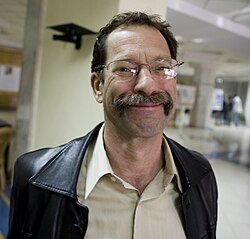
Joel Beinin
Der Sozialhistoriker ist Donald J. McLachlan Professor of History, Emeritus, an der Stanford University, wo er von 1983 bis 2019 lehrte. Sein Werk konzentriert sich auf Sozialgeschichte und politische Ökonomie des modernen Nahen Ostens, insbesondere Arbeiterbewegungen und religiöse Minderheiten in Ägypten, Palästina und Israel. Mit der Juristin Lisa Hajjar verfasste er „Palestine, Israel and the Arab-Israeli Conflict: A Primer“ — nach Angaben des Middle East Research and Information Project der meistgelesene Text der Organisation. 2002 war er Präsident der Middle East Studies Association of North America.
Foto: Hossam el-Hamalawy, CC BY 2.0, via Wikimedia Commons
 Was the Red Flag Flying There? Marxist Politics and the Arab-Israeli Conflict in Egypt and Israel, 1948–1965Was the Red Flag Flying There? Marxist Politics and the Arab-Israeli Conflict in Egypt and Israel, 1948–1965
Was the Red Flag Flying There? Marxist Politics and the Arab-Israeli Conflict in Egypt and Israel, 1948–1965Was the Red Flag Flying There? Marxist Politics and the Arab-Israeli Conflict in Egypt and Israel, 1948–1965 Workers on the Nile: Nationalism, Communism, Islam, and the Egyptian Working Class, 1882–1954 (mit Zachary Lockman)Workers on the Nile: Nationalism, Communism, Islam, and the Egyptian Working Class, 1882–1954 (mit Zachary Lockman)
Workers on the Nile: Nationalism, Communism, Islam, and the Egyptian Working Class, 1882–1954 (mit Zachary Lockman)Workers on the Nile: Nationalism, Communism, Islam, and the Egyptian Working Class, 1882–1954 (mit Zachary Lockman) Workers and Peasants in the Modern Middle EastWorkers and Peasants in the Modern Middle East
Workers and Peasants in the Modern Middle EastWorkers and Peasants in the Modern Middle EastUssama Makdisi
Der in Washington, D.C., geborene Historiker ist Professor of History an der University of California, Berkeley; zuvor lehrte er lange an der Rice University in Houston. Er ist ein Neffe Edward Saids und wurde 1997 an der Princeton University promoviert. Sein Werk verortet die Palästinafrage im Rahmen der Geschichte des westlichen Kolonialismus und der europäisch-amerikanischen Diplomatie im Nahen Osten. In „Age of Coexistence: The Ecumenical Frame and the Making of the Modern Arab World“ (2019) beschreibt er ein „ökumenisches Gefüge“ des Zusammenlebens verschiedener Religionsgemeinschaften in der spätosmanischen und post-osmanischen arabischen Welt, bis es durch Kolonialismus, Sektierertum und den Palästinakonflikt zunehmend unterminiert wurde.
Foto: Lilyisthebestdog, CC0 1.0, via Wikimedia Commons
 Artillery of Heaven: American Missionaries and the Failed Conversion of the Middle EastArtillery of Heaven: American Missionaries and the Failed Conversion of the Middle East
Artillery of Heaven: American Missionaries and the Failed Conversion of the Middle EastArtillery of Heaven: American Missionaries and the Failed Conversion of the Middle East Faith Misplaced: The Broken Promise of U.S.-Arab Relations, 1820–2001Faith Misplaced: The Broken Promise of U.S.-Arab Relations, 1820–2001
Faith Misplaced: The Broken Promise of U.S.-Arab Relations, 1820–2001Faith Misplaced: The Broken Promise of U.S.-Arab Relations, 1820–2001 Age of Coexistence: The Ecumenical Frame and the Making of the Modern Arab WorldAge of Coexistence: The Ecumenical Frame and the Making of the Modern Arab World
Age of Coexistence: The Ecumenical Frame and the Making of the Modern Arab WorldAge of Coexistence: The Ecumenical Frame and the Making of the Modern Arab WorldSalim Tamari
Der 1945 in Jaffa geborene Soziologe floh 1948 als Dreijähriger mit seiner Familie; er ist Professor Emeritus für Soziologie an der Universität Birzeit und langjähriger Senior Fellow des Institute for Palestine Studies. Er gilt vielen, darunter Rashid Khalidi, als der führende palästinensische Historiker-Soziologe seiner Generation — er verlagerte den Fokus der Palästinaforschung von Diplomatie und Konflikt auf Alltag, Städte und Kultur der palästinensischen Gesellschaft selbst. In „Mountain against the Sea: Essays on Palestinian Society and Culture“ (2008) rekonstruiert er anhand von Tagebüchern und Memoiren das intellektuelle Leben Jerusalems zwischen 1918 und 1948; „Year of the Locust“ (2011) erschließt die spätosmanische Zeit über das Tagebuch eines osmanischen Soldaten.
 Mountain against the Sea: Essays on Palestinian Society and CultureMountain against the Sea: Essays on Palestinian Society and Culture
Mountain against the Sea: Essays on Palestinian Society and CultureMountain against the Sea: Essays on Palestinian Society and Culture Year of the Locust: A Soldier's Diary and the Erasure of Palestine's Ottoman PastYear of the Locust: A Soldier's Diary and the Erasure of Palestine's Ottoman Past
Year of the Locust: A Soldier's Diary and the Erasure of Palestine's Ottoman PastYear of the Locust: A Soldier's Diary and the Erasure of Palestine's Ottoman Past Jerusalem 1948: The Arab Neighbourhoods and their Fate in the War (Hrsg., mit Issam Nassar)Jerusalem 1948: The Arab Neighbourhoods and their Fate in the War (Hrsg., mit Issam Nassar)
Jerusalem 1948: The Arab Neighbourhoods and their Fate in the War (Hrsg., mit Issam Nassar)Jerusalem 1948: The Arab Neighbourhoods and their Fate in the War (Hrsg., mit Issam Nassar) The Storyteller of Jerusalem: The Life and Times of Wasif Jawhariyyeh, 1904–1948 (Hrsg. mit Issam Nassar)The Storyteller of Jerusalem: The Life and Times of Wasif Jawhariyyeh, 1904–1948 (Hrsg. mit Issam Nassar)
The Storyteller of Jerusalem: The Life and Times of Wasif Jawhariyyeh, 1904–1948 (Hrsg. mit Issam Nassar)The Storyteller of Jerusalem: The Life and Times of Wasif Jawhariyyeh, 1904–1948 (Hrsg. mit Issam Nassar)Penny Green
Die Rechts- und Kriminologieprofessorin ist Professor of Law and Globalisation an der Queen Mary University of London. 2010 gründete sie mit Tony Ward die International State Crime Initiative (ISCI), ein Forschungsnetzwerk zu staatlicher Gewalt. Ihr theoretisches Grundlagenwerk „State Crime: Governments, Violence and Corruption“ (2004, mit Tony Ward) entwickelte den kriminologischen Rahmen, den sie später u. a. auf den Genozid an den Rohingya anwandte. Sie forscht seit vielen Jahren zu Zwangsvertreibung und Landenteignung in Palästina/Israel, dokumentiert im Sammelband „Palestine, Palestinians and Israel's State Criminality“ (2016), und beschreibt seit 2023 die israelische Politik gegenüber Gaza als aktiven, historisch bis zur Balfour-Deklaration 1917 zurückreichenden Genozidprozess.
 State Crime: Governments, Violence and Corruption (mit Tony Ward)State Crime: Governments, Violence and Corruption (mit Tony Ward)
State Crime: Governments, Violence and Corruption (mit Tony Ward)State Crime: Governments, Violence and Corruption (mit Tony Ward) State Crime and Civil Activism: On the Dialectics of Repression and Resistance (mit Tony Ward)State Crime and Civil Activism: On the Dialectics of Repression and Resistance (mit Tony Ward)
State Crime and Civil Activism: On the Dialectics of Repression and Resistance (mit Tony Ward)State Crime and Civil Activism: On the Dialectics of Repression and Resistance (mit Tony Ward)Mark Levene
Der Historiker ist Emeritus Fellow für Geschichte an der University of Southampton. Sein mehrbändiges Werk „Genocide in the Age of the Nation State“ (ab 2005) verortet Massengewalt und Genozid im Entstehungsprozess moderner europäischer Nationalstaaten und deren kolonialer Expansion. Für den Folgeband „The Crisis of Genocide“ (2013) erhielt er 2015 den Lemkin Award des Institute for the Study of Genocide. Seit 2023 äußert er sich wiederholt öffentlich zum Gaza-Krieg und wendet den Genozidbegriff explizit auf das israelische Vorgehen an.


Damien Short
Der Rechtswissenschaftler ist Professor for Human Rights and Environmental Justice an der University of London. Seine Forschung verbindet Genozidstudien mit Siedlerkolonialismus-Theorie und Umweltgerechtigkeit. In „Redefining Genocide: Settler Colonialism, Social Death and Ecocide“ (2016) plädiert er dafür, Genozid nicht nur als unmittelbare Massentötung zu verstehen, sondern — im Anschluss an Genozid-Begründer Raphael Lemkin — auch als schleichenden sozialen Tod einer Gruppe durch Zerstörung ihrer Lebensgrundlagen, Kultur und Umwelt; Palästina dient neben Sri Lanka, Australien und Kanada als eine von mehreren Fallstudien.


Lee Mordechai
Der israelische Historiker ist Senior Lecturer an der Hebräischen Universität Jerusalem; fachlich ist er eigentlich Byzantinist. Seit Oktober 2023 führt er das Projekt „Bearing Witness to the Israel-Gaza War“: eine fortlaufend aktualisierte, mit über 1.400 Fußnoten belegte Dokumentation von Zeugenaussagen, Medienberichten und Untersuchungen zur Gewalt gegen die Zivilbevölkerung in Gaza. Er führt das Projekt ausdrücklich als Privatperson und israelischer Bürger, nicht als Fachhistoriker für Byzanz. Aus der Gesamtschau seiner Belege zieht er den Schluss, Israel begehe einen Genozid an der Bevölkerung Gazas — eine Einschätzung, die er selbst ausdrücklich als persönliche, nicht als byzantinistische Fachmeinung kennzeichnet.
Genozid- und Holocaustforscher zu Gaza
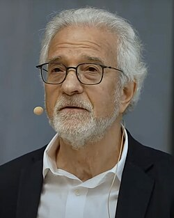
Omer Bartov
Der in Israel geborene, ehemalige IDF-Soldat ist Samuel-Pisar-Professor für Holocaust- und Genozidforschung an der Brown University und gilt als einer der führenden Holocaust-Forscher weltweit (Standardwerke u. a. „Hitler's Army“, „Anatomy of a Genocide“ über Buczacz). Im August 2024 kam er in einem Guardian-Essay zu dem Schluss, dass Israels Vorgehen in Gaza — spätestens seit dem Angriff auf Rafah im Mai 2024 — genozidale Züge trage. Am 15. Juli 2025 legte er in der New York Times unter dem Titel „I'm a Genocide Scholar. I Know It When I See It.“ dar, dass er zu Kriegsbeginn nicht von Genozid sprach, seine Einschätzung aber revidieren musste; 2025 arbeitete er die Position peer-reviewed im Journal of Genocide Research aus. Bartov betont dabei stets: Der Hamas-Angriff vom 7. Oktober 2023 war ein Massaker mit Kriegsverbrechen — und seine Einstufung israelischen Handelns als Genozid ist eine juristisch-wissenschaftliche Feststellung, kein Urteil über „die Israelis“ oder „die Juden“.
Foto: Bildungsstätte Anne Frank, CC BY 3.0, via Wikimedia Commons
 Anatomy of a Genocide: The Life and Death of a Town Called BuczaczAnatomy of a Genocide: The Life and Death of a Town Called BuczaczDE
Anatomy of a Genocide: The Life and Death of a Town Called BuczaczAnatomy of a Genocide: The Life and Death of a Town Called BuczaczDE Genocide, the Holocaust and Israel-Palestine: First-Person History in Times of CrisisGenocide, the Holocaust and Israel-Palestine: First-Person History in Times of Crisis
Genocide, the Holocaust and Israel-Palestine: First-Person History in Times of CrisisGenocide, the Holocaust and Israel-Palestine: First-Person History in Times of CrisisRaz Segal
Der Holocaust- und Genozidforscher an der Stockton University sprach bereits im Oktober 2023 in der Zeitschrift Jewish Currents von einem „textbook case of genocide“ — die früheste prominente wissenschaftliche Einstufung des Gaza-Kriegs als Genozid.

Amos Goldberg
Der Holocaust-Forscher an der Hebräischen Universität Jerusalem veröffentlichte im April 2024 den Essay „Yes, it is genocide“ — eine Einschätzung, die deshalb besonderes Gewicht erhielt, weil sie aus Israel selbst kam.


Melanie O'Brien
O'Brien ist Professorin für Völkerrecht an der University of Western Australia; von 2021/2022 bis 2025 war sie Präsidentin der International Association of Genocide Scholars (IAGS). 2025 vertrat sie öffentlich die Position, die Situation in Gaza erfülle die Kriterien der Genozidkonvention von 1948 sowie des Römischen Statuts — gestützt auf Äußerungen israelischer Entscheidungsträger sowie ein Muster von Handlungen wie Tötungen, Zerstörung der Lebensgrundlagen und Beeinträchtigung der Geburtenfähigkeit durch Unterernährung.
 Criminalising Peacekeepers: Modernising National Approaches to Sexual Exploitation and AbuseCriminalising Peacekeepers: Modernising National Approaches to Sexual Exploitation and Abuse
Criminalising Peacekeepers: Modernising National Approaches to Sexual Exploitation and AbuseCriminalising Peacekeepers: Modernising National Approaches to Sexual Exploitation and Abuse From Discrimination to Death: Genocide Process Through a Human Rights LensFrom Discrimination to Death: Genocide Process Through a Human Rights Lens
From Discrimination to Death: Genocide Process Through a Human Rights LensFrom Discrimination to Death: Genocide Process Through a Human Rights LensErnesto Verdeja
Verdeja ist Associate Professor am Kroc Institute for International Peace Studies der University of Notre Dame und Executive Director des Institute for the Study of Genocide. Äußerte er sich Ende 2023 zunächst zurückhaltend, vertrat er in seinem 2026 im Journal of Genocide Research erschienenen Aufsatz „The Gaza Genocide in Five Crises“ explizit die Genozid-These und verortet die Situation als Verschränkung von fünf ineinandergreifenden Krisen — humanitär, disziplinär, völkerrechtlich, UN-institutionell und international-präventiv.
 Unchopping a Tree: Reconciliation in the Aftermath of Political ViolenceUnchopping a Tree: Reconciliation in the Aftermath of Political Violence
Unchopping a Tree: Reconciliation in the Aftermath of Political ViolenceUnchopping a Tree: Reconciliation in the Aftermath of Political Violence Genocide Matters: Ongoing Issues and Emerging Perspectives (Hrsg., mit Joyce Apsel)Genocide Matters: Ongoing Issues and Emerging Perspectives (Hrsg., mit Joyce Apsel)
Genocide Matters: Ongoing Issues and Emerging Perspectives (Hrsg., mit Joyce Apsel)Genocide Matters: Ongoing Issues and Emerging Perspectives (Hrsg., mit Joyce Apsel)Victoria Sanford, Barry Trachtenberg, John Cox
Sanford (CUNY, Genozidforscherin zu Guatemala), Trachtenberg (Wake Forest University, moderne jüdische Geschichte) und Cox (UNC Charlotte, Leiter eines Zentrums für Holocaust- und Genozidforschung) legten 2023 gemeinsam eine fachwissenschaftliche Erklärung vor US-Gerichten vor: Trotz der hohen Beweisschwelle des Genozidtatbestands gebe es unter Verweis auf Muster früherer Genozide erhebliche Anhaltspunkte für einen sich entfaltenden Genozid Israels an der Zivilbevölkerung Gazas; die drei forderten ein Ende der US-Waffen- und Finanzhilfe an Israel.
 Buried Secrets: Truth and Human Rights in GuatemalaBuried Secrets: Truth and Human Rights in Guatemala
Buried Secrets: Truth and Human Rights in GuatemalaBuried Secrets: Truth and Human Rights in Guatemala La Masacre de Panzós: Etnicidad, Tierra y Violencia en GuatemalaLa Masacre de Panzós: Etnicidad, Tierra y Violencia en Guatemala
La Masacre de Panzós: Etnicidad, Tierra y Violencia en GuatemalaLa Masacre de Panzós: Etnicidad, Tierra y Violencia en Guatemala The United States and the Nazi Holocaust: Race, Refuge, and RemembranceThe United States and the Nazi Holocaust: Race, Refuge, and Remembrance
The United States and the Nazi Holocaust: Race, Refuge, and RemembranceThe United States and the Nazi Holocaust: Race, Refuge, and Remembrance The Holocaust and the Exile of Yiddish: A History of the Algemeyne EntsiklopedyeThe Holocaust and the Exile of Yiddish: A History of the Algemeyne Entsiklopedye
The Holocaust and the Exile of Yiddish: A History of the Algemeyne EntsiklopedyeThe Holocaust and the Exile of Yiddish: A History of the Algemeyne Entsiklopedye To Kill a People: Genocide in the Twentieth CenturyTo Kill a People: Genocide in the Twentieth Century
To Kill a People: Genocide in the Twentieth CenturyTo Kill a People: Genocide in the Twentieth Century Circles of Resistance: Jewish, Leftist, and Youth Dissidence in Nazi GermanyCircles of Resistance: Jewish, Leftist, and Youth Dissidence in Nazi Germany
Circles of Resistance: Jewish, Leftist, and Youth Dissidence in Nazi GermanyCircles of Resistance: Jewish, Leftist, and Youth Dissidence in Nazi GermanyZohar Lederman, Anne Irfan, Shmuel Lederman
Das interdisziplinäre Team — Zohar Lederman (Notfallmediziner und Bioethiker, University of Hong Kong), Anne Irfan (Historikerin, UCL, spezialisiert auf palästinensische Geflüchtete und UNRWA) und Shmuel Lederman (Politikwissenschaftler, Universität Haifa, Hannah-Arendt-Forschung) — veröffentlichte 2025 im Journal of Bioethical Inquiry den Fachbeitrag „Is it Genocide? Yes It Is“. Unter Rückgriff auf Raphael Lemkins ursprüngliche Arbeitsdefinition von Genozid argumentieren die drei, die Situation in Gaza erfülle die Kriterien.
Historiker und historisch arbeitende Sozialforscher (weitere)
Maha Nassar
Nassar ist Associate Professor an der University of Arizona. Ihr Hauptwerk „Brothers Apart: Palestinian Citizens of Israel and the Arab World“ (2017) zeigt, wie palästinensische Kulturschaffende innerhalb Israels in den 1950er- und 60er-Jahren über arabischsprachige Zeitungen transnationale Verbindungen zur arabischen Welt und zu Dekolonisierungsbewegungen der Dritten Welt herstellten. Das Buch erhielt 2018 den Palestine Book Award.

Shay Hazkani
Der israelische Historiker ist Associate Professor an der University of Maryland. Sein Hauptwerk „Dear Palestine: A Social History of the 1948 War“ (2021) rekonstruiert den Krieg von 1948 anhand privater, von der israelischen Zensur beschlagnahmter Briefe arabischer und jüdischer Soldaten und rückt deren Erfahrungen anstelle nationalistischer Meistererzählungen in den Mittelpunkt. Das Buch wurde mehrfach ausgezeichnet und war für den Cundill History Prize gelistet.

Shira Robinson
Robinson ist Associate Professor an der George Washington University. Ihr Hauptwerk „Citizen Strangers: Palestinians and the Birth of Israel's Liberal Settler State“ (2013) untersucht, wie Israel den nach 1948 verbliebenen Palästinenser:innen rasch Staatsbürgerrechte einräumte, ihnen aber über ein bis 1966 bestehendes Militärregime Bewegungsfreiheit und weitere Rechte massiv beschnitt — die widersprüchliche Konstruktion einer „liberalen Siedlerstaatlichkeit“. Das Buch wurde 2014 als eines der 25 besten akademischen Bücher des Jahres ausgezeichnet.

Jacob Norris
Norris ist Associate Professor an der University of Sussex. In „Land of Progress: Palestine in the Age of Colonial Development, 1905–1948“ (2013) zeigt er, wie unter dem britischen Mandat eine zuvor gemischte Entwicklungsdynamik zunehmend zugunsten des Zionismus als vermeintlich alleinigem Modernisierungsmotor verdrängt wurde. Aktuell forscht er zur Geschichte palästinensischer Solidaritätsbewegungen in Lateinamerika.
 Land of Progress: Palestine in the Age of Colonial Development, 1905–1948Land of Progress: Palestine in the Age of Colonial Development, 1905–1948
Land of Progress: Palestine in the Age of Colonial Development, 1905–1948Land of Progress: Palestine in the Age of Colonial Development, 1905–1948 The Lives and Deaths of Jubrail Dabdoub: Or, How the Bethlehemites Discovered AmerkaThe Lives and Deaths of Jubrail Dabdoub: Or, How the Bethlehemites Discovered Amerka
The Lives and Deaths of Jubrail Dabdoub: Or, How the Bethlehemites Discovered AmerkaThe Lives and Deaths of Jubrail Dabdoub: Or, How the Bethlehemites Discovered AmerkaIlana Feldman
Feldman ist Professor of Anthropology, History, and International Affairs an der George Washington University und zählt zu den zentralen Gaza-Forscherinnen. Ihr Hauptwerk „Life Lived in Relief: Humanitarian Predicaments and Palestinian Refugee Politics“ (2018) rekonstruiert, wie palästinensische Geflüchtete über Generationen hinweg mit humanitärer Hilfe leben; zentral ist ihr Konzept der „chronic temporariness“ — was es bedeutet, wenn ein eigentlich temporärer Status zum Dauerzustand wird.
 Governing Gaza: Bureaucracy, Authority, and the Work of Rule, 1917–1967Governing Gaza: Bureaucracy, Authority, and the Work of Rule, 1917–1967
Governing Gaza: Bureaucracy, Authority, and the Work of Rule, 1917–1967Governing Gaza: Bureaucracy, Authority, and the Work of Rule, 1917–1967 Police Encounters: Security and Surveillance in Gaza under Egyptian RulePolice Encounters: Security and Surveillance in Gaza under Egyptian Rule
Police Encounters: Security and Surveillance in Gaza under Egyptian RulePolice Encounters: Security and Surveillance in Gaza under Egyptian Rule Life Lived in Relief: Humanitarian Predicaments and Palestinian Refugee PoliticsLife Lived in Relief: Humanitarian Predicaments and Palestinian Refugee Politics
Life Lived in Relief: Humanitarian Predicaments and Palestinian Refugee PoliticsLife Lived in Relief: Humanitarian Predicaments and Palestinian Refugee PoliticsLori Allen
Die Anthropologin ist Reader an der SOAS University of London. In „The Rise and Fall of Human Rights: Cynicism and Politics in Occupied Palestine“ (2013) zeigt sie, wie der verbreitete Zynismus vieler Palästinenser gegenüber der Menschenrechtsarbeit Ausdruck der Frustration über deren begrenzte Wirkung ist. „A History of False Hope: Investigative Commissions in Palestine“ (2020) rekonstruiert sechs internationale Untersuchungskommissionen zu politischer Gewalt in Palästina über ein Jahrhundert.


Amahl Bishara
Die Anthropologin ist Professorin und Vorsitzende des Anthropology Department an der Tufts University. In „Back Stories: U.S. News Production and Palestinian Politics“ (2013) legt sie offen, wie palästinensische Journalisten — als Fixer, Fotojournalisten, Kameraleute — im Hintergrund jene Arbeit leisten, von der die US-Berichterstattung über den Konflikt abhängt, ohne dass diese Kollaboration für westliche Leser sichtbar wird.


Nadera Shalhoub-Kevorkian
Die palästinensische Rechts- und Kriminologieforscherin war bis 2024 Professorin an der Hebrew University of Jerusalem, seither Global Chair in Law an der Queen Mary University of London. In „Incarcerated Childhood and the Politics of Unchilding“ (2019) prägt sie den Begriff des „Unchilding“: die politische Arbeit von Gewalt, die kolonisierte Kinder als gefährliche, rassifizierte Andere konstruiert und sie dadurch aus der Kategorie „Kindheit“ selbst vertreibt.
 Militarization and Violence against Women in Conflict Zones in the Middle East: A Palestinian Case-StudyMilitarization and Violence against Women in Conflict Zones in the Middle East: A Palestinian Case-Study
Militarization and Violence against Women in Conflict Zones in the Middle East: A Palestinian Case-StudyMilitarization and Violence against Women in Conflict Zones in the Middle East: A Palestinian Case-Study Incarcerated Childhood and the Politics of UnchildingIncarcerated Childhood and the Politics of Unchilding
Incarcerated Childhood and the Politics of UnchildingIncarcerated Childhood and the Politics of UnchildingNeve Gordon
Der israelische Politikwissenschaftler lehrt Völkerrecht und Menschenrechte an der Queen Mary University of London, zuvor an der Ben-Gurion University of the Negev. Sein Buch „Israel's Occupation“ (2008) argumentiert, dass die Struktur der Besatzung selbst — nicht einzelne politische Entscheidungen — den Wandel von einer anfänglichen „Politik des Lebens“ hin zu einer von steigenden Opferzahlen geprägten Politik erklärt. Mit Nicola Perugini untersucht er zudem, wie Menschenrechtsbegriffe zugleich zur Verstärkung von Unterwerfung eingesetzt werden können.
Foto: Evencatherine, CC BY-SA 4.0, via Wikimedia Commons


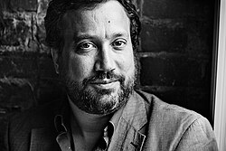
Eyal Weizman
Der britisch-israelische Architekt und Theoretiker, geboren in Haifa, ist Professor an der Goldsmiths, University of London. 2010 gründete er dort die Forschungsagentur Forensic Architecture, die staatliche Gewalt und Menschenrechtsverletzungen mittels räumlicher und akustischer Rekonstruktion untersucht — durch Kreuzabgleich von Satellitenbildern, Videomaterial, 3D-Modellen und Zeugenaussagen. Die Ergebnisse werden regelmäßig in Gerichtsverfahren, UN-Untersuchungen und Menschenrechtsberichten zu israelischem Vorgehen in Gaza und im Westjordanland verwendet.
Foto: Ekaterina Izmestieva, CC BY 2.0, via Wikimedia Commons


Völkerrechtler mit palästinensisch zentrierter Perspektive
Noura Erakat
Die palästinensisch-amerikanische Menschenrechtsanwältin ist Professor of Africana Studies an der Rutgers University. Ihr Hauptwerk „Justice for Some: Law and the Question of Palestine“ (2019) zeichnet nach, wie internationales Recht im Kontext der Palästina-Frage strukturell unbestimmt geblieben ist: Dieselben Normen dienten je nach politischem Kräfteverhältnis sowohl der Legitimierung israelischer Politik als auch, in geringerem Maß, dem palästinensischen Widerstand. Das Buch erhielt den Palestine Book Award 2019.
Foto: New America, CC BY 2.0, via Wikimedia Commons

Ardi Imseis
Der kanadisch-palästinensische Völkerrechtler ist Associate Professor an der Queen's University und war zuvor zwölf Jahre UN-Beamter (u. a. UNRWA, UNHCR). Sein Hauptwerk „The United Nations and the Question of Palestine“ (2023) argumentiert, die UN praktiziere in der Palästina-Frage „rule by law“ statt echter Bindung an das Völkerrecht, wodurch Palästinenser in einen Zustand „internationaler rechtlicher Subalternität“ versetzt würden. Imseis vertrat 2024 den Staat Palästina vor dem Internationalen Gerichtshof.

Susan Akram
Akram ist Clinical Professor of Law an der Boston University School of Law und leitet dort die International Human Rights Clinic. Ihre Forschung befasst sich mit dem besonderen Status palästinensischer Flüchtlinge, deren Staatenlosigkeit und Rückkehrrechten unter Völkerrecht; sie ist Mitherausgeberin von „International Law and the Israeli-Palestinian Conflict: A Rights-Based Approach to Middle East Peace“ (2011).

Michael Lynk
Der kanadische Rechtswissenschaftler ist Professor Emeritus an der Western University und war von 2016 bis 2022 UN-Sonderberichterstatter für die Menschenrechtslage in den seit 1967 besetzten palästinensischen Gebieten. In seinem Abschlussbericht vom März 2022 kam er zu dem Schluss, dass die 55-jährige israelische Besatzung der palästinensischen Gebiete die Schwelle zur Apartheid im Sinne des Völkerrechts überschritten habe.
Foto: Schulich School of Law, CC BY 3.0, via Wikimedia Commons
 Protecting Human Rights in Occupied Palestine: Working Through the United Nations (mit Richard Falk und John Dugard)Protecting Human Rights in Occupied Palestine: Working Through the United Nations (mit Richard Falk und John Dugard)
Protecting Human Rights in Occupied Palestine: Working Through the United Nations (mit Richard Falk und John Dugard)Protecting Human Rights in Occupied Palestine: Working Through the United Nations (mit Richard Falk und John Dugard) A Moon Will Rise from the Darkness: Reports on Israel's Genocide in Palestine (Hauptautorin Francesca Albanese, mit Falk, Dugard, Lynk)A Moon Will Rise from the Darkness: Reports on Israel's Genocide in Palestine (Hauptautorin Francesca Albanese, mit Falk, Dugard, Lynk)
A Moon Will Rise from the Darkness: Reports on Israel's Genocide in Palestine (Hauptautorin Francesca Albanese, mit Falk, Dugard, Lynk)A Moon Will Rise from the Darkness: Reports on Israel's Genocide in Palestine (Hauptautorin Francesca Albanese, mit Falk, Dugard, Lynk)Ralph Wilde
Wilde ist Professor of International Law am University College London. Er vertritt die These, dass nicht nur einzelne Praktiken der israelischen Besatzung völkerrechtswidrig seien, sondern die fortgesetzte Besatzung als solche: Da sie das palästinensische Volk dauerhaft an der Ausübung seines Selbstbestimmungsrechts hindere, sei ihre bloße Fortdauer mit dem Selbstbestimmungsrecht und dem Gewaltverbot unvereinbar. Er fungierte 2024 als Legal Advisor der Liga der Arabischen Staaten vor dem Internationalen Gerichtshof.

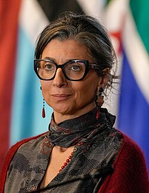
Francesca Albanese
Die italienische Völkerrechtlerin ist seit Mai 2022 UN-Sonderberichterstatterin für die Menschenrechtslage in den seit 1967 besetzten palästinensischen Gebieten — die erste Frau in diesem Mandat. Ihr Bericht „Anatomy of a Genocide“ (März 2024) kam zu dem Schluss, es bestünden hinreichende Gründe für die Annahme, Israel habe in Gaza die Schwelle zum Völkermord überschritten. Ihr Folgebericht „Genocide as Colonial Erasure“ ordnet dies als Kulminationspunkt einer settler-kolonialen Auslöschungslogik ein. Für ihre Berichterstattung wurde sie 2025 von der US-Regierung sanktioniert.
Foto: Andrea Puentes, Presidencia de Colombia, Public Domain, via Wikimedia Commons
 J'accuse. Gli attacchi del 7 ottobre, Hamas, il terrorismo, Israele, l'apartheid in Palestina e la guerra (mit Christian Elia)J'accuse. Gli attacchi del 7 ottobre, Hamas, il terrorismo, Israele, l'apartheid in Palestina e la guerra (mit Christian Elia)
J'accuse. Gli attacchi del 7 ottobre, Hamas, il terrorismo, Israele, l'apartheid in Palestina e la guerra (mit Christian Elia)J'accuse. Gli attacchi del 7 ottobre, Hamas, il terrorismo, Israele, l'apartheid in Palestina e la guerra (mit Christian Elia) Quando il mondo dorme / When the World Sleeps: Stories, Words, and Wounds of PalestineQuando il mondo dorme / When the World Sleeps: Stories, Words, and Wounds of Palestine
Quando il mondo dorme / When the World Sleeps: Stories, Words, and Wounds of PalestineQuando il mondo dorme / When the World Sleeps: Stories, Words, and Wounds of PalestineDeutschsprachige Wissenschaftler
Helga Baumgarten
Die Stuttgarter Politikwissenschaftlerin lehrte ab 1993 an der Universität Birzeit im Westjordanland, ab 2004 als ordentliche Professorin, bis zu ihrer Emeritierung 2019. Ihr Hauptwerk „Palästina: Befreiung in den Staat“ (1991) zeichnet den Weg der PLO von der bewaffneten Befreiungsbewegung zum Anspruch auf Staatlichkeit nach; ihre Darstellung gilt als dezidiert aus palästinensischer Perspektive geschrieben.
 Palästina: Befreiung in den Staat. Die palästinensische Nationalbewegung seit 1948Palästina: Befreiung in den Staat. Die palästinensische Nationalbewegung seit 1948DE
Palästina: Befreiung in den Staat. Die palästinensische Nationalbewegung seit 1948Palästina: Befreiung in den Staat. Die palästinensische Nationalbewegung seit 1948DE Hamas: Der politische Islam in PalästinaHamas: Der politische Islam in PalästinaDE
Hamas: Der politische Islam in PalästinaHamas: Der politische Islam in PalästinaDE Kampf um Palästina: Was wollen Hamas und Fatah?Kampf um Palästina: Was wollen Hamas und Fatah?DE
Kampf um Palästina: Was wollen Hamas und Fatah?Kampf um Palästina: Was wollen Hamas und Fatah?DEMuriel Asseburg
Die Politikwissenschaftlerin ist Senior Fellow bei der Stiftung Wissenschaft und Politik (SWP) in Berlin. Ihre Arbeit zeichnet sich durch einen nüchternen, institutionell geprägten Zugang aus. In „Der 7. Oktober und der Krieg in Gaza“ (2025) ordnet sie die Ereignisse seit dem 7. Oktober 2023 historisch ein und zeigt die humanitären Folgen für die Zivilbevölkerung in Gaza.

Jan Busse
Der Politikwissenschaftler forscht und lehrt an der Universität der Bundeswehr München zu Israel/Palästina sowie deutscher und europäischer Nahostpolitik. Seine Analysen betonen die strukturellen Machtasymmetrien zwischen Israel und den Palästinensern. Mit Muriel Asseburg verfasste er den vielfach neu aufgelegten Überblicksband „Der Nahostkonflikt: Geschichte, Positionen, Perspektiven“.
 Der Nahostkonflikt: Geschichte, Positionen, PerspektivenDer Nahostkonflikt: Geschichte, Positionen, PerspektivenDE
Der Nahostkonflikt: Geschichte, Positionen, PerspektivenDer Nahostkonflikt: Geschichte, Positionen, PerspektivenDE Deconstructing the Dynamics of World-Societal Order: The Power of Governmentality in PalestineDeconstructing the Dynamics of World-Societal Order: The Power of Governmentality in Palestine
Deconstructing the Dynamics of World-Societal Order: The Power of Governmentality in PalestineDeconstructing the Dynamics of World-Societal Order: The Power of Governmentality in PalestineSport und Wissenschaft: sechs Lebenswege
Ein Nobelpreisträger, vier Olympia-Teilnehmende und ein Fußballprofi, der drei Jahre ohne Anklage in Haft saß. Sechs Lebenswege, an denen sichtbar wird, was Besatzung und Blockade für eine sportliche oder wissenschaftliche Laufbahn bedeuten.
Sport und WissenschaftSport und Wissenschaft
Die bisherigen Gruppen versammeln Kultur, Politik und Forschung über Palästina. Diese Gruppe zeigt Menschen, die in ihrem Fach angetreten sind — und bei denen die Besatzung im Lebenslauf steht, ohne dass sie das Thema ihres Lebens wäre: ein Läufer, der auf von Luftangriffen aufgerissenen Straßen trainierte, eine Kapitänin, die den ersten Frauenfußball ihres Landes gründete, ein Nationalspieler, dessen Karriere in einer Haft ohne Anklage endete — und der erste Nobelpreisträger palästinensischer Herkunft.
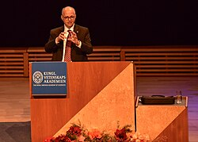
Omar M. Yaghi
Geboren am 9. Februar 1965 in Amman als Kind palästinensischer Flüchtlinge, verbrachte er seine Kindheit in Jordanien und ging mit 15 Jahren allein in die USA. Er wurde einer der einflussreichsten Chemiker seiner Generation: Yaghi entwickelte die metallorganischen Gerüstverbindungen (metal-organic frameworks, MOFs) — kristalline Materialien aus Metallionen und kohlenstoffbasierten Molekülen, die im Inneren Hohlräume bilden. Je nach Bauweise lassen sich darin gezielt Stoffe einfangen und speichern: Wasser aus Wüstenluft, Kohlendioxid, giftige Gase. Am 8. Oktober 2025 erhielt er dafür gemeinsam mit Susumu Kitagawa und Richard Robson den Nobelpreis für Chemie, mit der Begründung „für die Entwicklung metallorganischer Gerüstverbindungen“; zum Zeitpunkt der Auszeichnung forschte er an der University of California, Berkeley. Er ist der erste Nobelpreisträger palästinensischer Herkunft in einer Naturwissenschaft.
Foto: Karen Zhou, CC BY-SA 4.0, via Wikimedia Commons
Majed Abu Maraheel
Geboren am 5. Juni 1963 im Flüchtlingslager Nuseirat im Gazastreifen. Bei den Spielen von Atlanta 1996 — den ersten nach der Anerkennung des Palästinensischen Olympischen Komitees durch das IOC 1995 — trug er als erster Fahnenträger Palästinas die Flagge ins Stadion und war der erste Palästinenser überhaupt bei Olympischen Spielen. Über 10.000 Meter lief er 34:40,50 Minuten und schied im Vorlauf aus; die Platzierung war nebensächlich, der Auftritt selbst das Ereignis. Trainiert hatte er als Tagelöhner, Presseberichten zufolge auf dem Arbeitsweg zum Erez-Übergang. Zuvor spielte er ab 1981 Fußball beim Al-Zaytoun Sports Club, 1995 gewann er die Crosslauf-Meisterschaft von Gaza. Ab 1998 studierte er in Leipzig, erwarb ein Trainerzertifikat und trainierte später palästinensische Olympioniken; er war Vizepräsident des Leichtathletikverbands. Am 11. Juni 2024 starb er mit 61 Jahren in Nuseirat an Nierenversagen: Im Krieg konnte er wegen Stromausfällen und fehlender Versorgung nicht ausreichend behandelt werden, eine Evakuierung über Rafah gelang nicht mehr.
Nader al-Masri
Geboren am 26. Januar 1980 in Beit Hanoun im nördlichen Gazastreifen. 2008 war er einer von vier palästinensischen Olympiateilnehmern in Peking und der einzige aus dem Gazastreifen; über 5.000 Meter lief er 15:47,47 Minuten. Sein Weg dorthin ist ein Lehrstück über Sport unter Blockadebedingungen: Zehn Jahre trainierte er auf den von Luftangriffen aufgerissenen Straßen um Beit Hanoun; Israel lehnte seine Ausreiseanträge zum Training monatelang ab und erteilte die Genehmigung erst im April 2008. 2014 verweigerten die Behörden ihm die Teilnahme am Bethlehem-Marathon im Westjordanland — ein Fall, der international Aufsehen erregte. 2015 durften Läufer aus Gaza erstmals und bislang einmalig zum Palestine Marathon anreisen; al-Masri gewann das Rennen. Er engagierte sich zudem beim Gaza-Marathon, den die UNRWA ab 2011 zur Finanzierung ihrer Sommerlager veranstaltete, bis das Rennen 2013 abgesagt wurde, nachdem die Hamas-Behörden die Teilnahme von Frauen untersagt hatten.
Honey Thaljieh
1984 in Bethlehem geboren. Als Mädchen spielte sie auf der Straße mit Jungen — organisierten Frauenfußball gab es nicht, weder Bälle und Plätze noch gesellschaftliche Akzeptanz. 2003 gründete sie mit Mitstreiterinnen die erste palästinensische Frauen-Fußballnationalmannschaft und wurde deren erste Kapitänin. Die Mannschaft entstand mitten in der Zweiten Intifada; Training und Anreise waren durch Ausgangssperren und Checkpoints dauerhaft gefährdet. Eine Knieverletzung beendete ihre aktive Laufbahn früh. Sie studierte Betriebswirtschaft an der Universität Bethlehem und absolvierte als erste Frau aus dem Nahen Osten den FIFA Master, den internationalen Masterstudiengang für Sportmanagement; seit 2013 arbeitet sie in der Unternehmenskommunikation der FIFA in Zürich zu Gleichstellung, Bildung und Frieden durch Fußball. Sie ist „Champion of Peace“ der Stiftung Peace and Sport.
Valerie Tarazi
Geboren am 9. Oktober 1999, aufgewachsen als Palästinensisch-Amerikanerin in Illinois, im College-Sport für die Auburn University. Bei den Olympischen Spielen 2024 in Paris startete sie für Palästina über 200 Meter Lagen und trug bei Eröffnungs- und Schlussfeier die palästinensische Fahne. Sie hält elf palästinensische Landesrekorde, neun davon in Einzelstrecken, und qualifizierte sich über zwei Weltmeisterschaftsteilnahmen mit der höchsten World-Aquatics-Punktzahl aller palästinensischen Schwimmerinnen. Ihr Großvater Kamel Tarazi stammte aus Gaza-Stadt und ging in den 1950er Jahren zum Studium in die USA; ein Haus der Familie in Rafah ist nach Darstellung der Familie seit 1755 in ihrem Besitz. Über ihr Verhältnis zur Heimat sagte sie sinngemäß, weder sie noch ihr Großvater hätten Gaza freiwillig verlassen. Gemeinsam mit dem Schwimmer Yazan al-Bawwab nutzte sie die Aufmerksamkeit der Spiele, um auf die Lage in Gaza aufmerksam zu machen: Schon das Antreten sei eine Aussage.
Foto: Frank Barat, CC BY 3.0, via Wikimedia Commons
Mahmoud Sarsak
Geboren am 20. Januar 1987 im Flüchtlingslager Rafah, Stürmer der palästinensischen Nationalmannschaft. Am 22. Juli 2009 wurde er am Erez-Übergang festgenommen, als er mit gültiger Genehmigung von Gaza ins Westjordanland reisen wollte, um bei seinem neuen Verein Balata Youth zu spielen. Israel stufte ihn als „unlawful combatant“ ein — ein Status, der Inhaftierung ohne Anklage und ohne Prozess auf unbestimmte Zeit erlaubt. Nach der sechsten Verlängerung seiner Haft trat er im März 2012 in den Hungerstreik, der rund drei Monate dauerte und als der längste eines palästinensischen Gefangenen in israelischer Haft gilt. Amnesty International führte seinen Fall, der zuständige UN-Sonderberichterstatter forderte öffentlich seine Freilassung, im britischen Unterhaus wurde ein Antrag eingebracht, und auch der internationale Fußball schaltete sich ein. Am 10. Juli 2012 kam er nach drei Jahren ohne Anklage frei und wurde in Gaza empfangen — im Rollstuhl. An den Leistungssport konnte er nicht mehr anknüpfen; er ist seither als Aktivist und Autor für die Rechte palästinensischer Gefangener tätig.
Foto: Palestine Solidarity Campaign, CC BY 2.0, via Wikimedia Commons
Porträts und Orte


Die Getöteten: was dem Geistesleben in Gaza genommen wurde
Diese Seite versammelt Menschen, die Palästina erforscht, beschrieben und gestaltet haben. Seit Oktober 2023 ist ein Teil genau dieser Gruppe getötet worden — Hochschullehrer, Schriftstellerinnen, Dichter, Theaterleute. Dieses Kapitel steht hier, weil eine Porträtsammlung sonst verschweigt, was mit den Porträtierten und ihren Nachfolgern geschieht.
Sufian Tayeh (20.8.1971 – 2.12.2023), Physiker und angewandter Mathematiker, seit August 2023 Präsident der Islamischen Universität Gaza. Er wurde 2021 unter die besten zwei Prozent der Forschenden weltweit gezählt und war seit 2023 UNESCO-Lehrstuhlinhaber für Physik, Astronomie und Weltraumwissenschaften in Palästina. Er starb bei einem Luftangriff im Falludscha-Viertel von Dschabalia — zusammen mit seiner Familie.
Refaat Alareer (23.9.1979 – 6.12.2023), Professor für englische Literatur mit einer Doktorarbeit über John Donne, Herausgeber von Gaza Writes Back (2014), Mitherausgeber von Gaza Unsilenced (2015) und Mitbegründer der Schreibwerkstatt We Are Not Numbers, die jungen Menschen in Gaza das Schreiben auf Englisch beibrachte. Ausführlich steht er auf der Seite Wer es dokumentiert hat.
Die BilanzWas die Berufsverbände gezählt haben
PEN International, der weltweite Verband der Schriftstellerinnen und Schriftsteller, startete am 6. Dezember 2024 — dem ersten Jahrestag von Alareers Tod — das Projekt War on Writers. Es dokumentiert 23 Schriftsteller und Dichter, die zwischen Oktober 2023 und September 2024 in Gaza getötet wurden, und bezeichnet diesen Zeitraum als den tödlichsten für Schreibende in jüngerer Geschichte.
| Erhebung | Zeitraum | Ergebnis |
|---|---|---|
| PEN International, War on Writers | 10/2023 – 09/2024 | 23 getötete Schriftsteller und Dichter |
| Weiter gefasste Aufstellung, die auch Hochschullehrende einschließt | seit 10/2023 | 24 Schriftsteller · 83 Professoren · 12 Dichter · 2 Liedtexter · 2 Filmemacher · 1 Dramatikerin · 1 Übersetzer |
| Palästinensisches Kulturministerium | 10/2023 – 02/2024 | 45 getötete Künstler, Schriftsteller und Kulturschaffende |
Unter den Getöteten war auch Inas al-Saqa, 53 Jahre alt, Dramatikerin, Schauspielerin und eine der ersten Frauen in der Theaterproduktion in Gaza.
Sie überschneiden sich und sind unterschiedlich abgegrenzt. Ob jemand als „Schriftsteller“, „Dichter“ oder „Professor“ gezählt wird, hängt von der erhebenden Stelle ab — mehrere der Getöteten waren beides. Diese Seite rechnet die Zahlen deshalb nicht zusammen und nennt jede mit ihrer Quelle und ihrem Zeitraum.
Und sie sind nicht fortgeschrieben. Die PEN-Erhebung endet im September 2024, die des Kulturministeriums im Februar 2024. Eine aktuelle Gesamtbilanz der getöteten Kulturschaffenden und Hochschullehrenden liegt für 2025 und 2026 nicht vor. Was in dieser Zeit mit den Hochschulen selbst geschah, steht unter Kriegsführung; die Namen der namentlich erfassten Getöteten sind auf Die Namen durchsuchbar.
Quellen: PEN International, Projekt War on Writers — Honoring Palestinian Writers Lost in Gaza (pen-international.org) · PEN America, Israeli and Palestinian Writers and Artists: The Toll of War · Al Arabiya, Asharq Al-Awsat und Morocco World News zum Tod Sufian Tayehs (2.12.2023) · Al Jazeera und Middle East Eye zum Tod Refaat Alareers (6.12.2023) · Angaben des palästinensischen Kulturministeriums.
Quellen dieser Seite
Menschen (Gruppen A–C)
- palquest – Interactive Encyclopedia of the Palestine Question (Biografien)
- Institute for Palestine Studies – Profil Walid Khalidi
- Arab Center Washington DC – Nachruf Walid Khalidi (1925–2026)
- Making Israel, hg. von Benny Morris (University of Michigan Press) – New Historians: Archivöffnung und Kernthesen
- Al Jazeera – Met reopens cartoonist Naji al-Ali murder case (2017)
- Nobelprize.org – Yasser Arafat, Friedensnobelpreis 1994
- Wellcome Collection – Tawfiq Canaan und seine Amulett-Sammlung
- Institute for Palestine Studies – Sa'di/Abu-Lughod: Nakba, Palestine 1948, and the Claims of Memory (zur Begriffsgeschichte von Ma'na al-Nakba, Constantin Zureiq 1948)
- Brandeis University Press – Hillel Cohen: Year Zero of the Arab-Israeli Conflict 1929
- Brown University – Profil Beshara Doumani
- UC Santa Barbara – Profil Sherene Seikaly
- Institute for Palestine Studies – Rochelle Davis: Palestinian Village Histories
- NPR – Even in prison, Marwan Barghouthi looms large in Palestinian politics (Januar 2026)
- Jerusalem Story – Biografie Faisal al-Husseini
- Middle East Monitor – Profil Ghassan Kanafani (1936–1972)
- Nobelprize.org – Omar M. Yaghi, Nobelpreis für Chemie 2025 (amtliche Fakten)
- Peace and Sport – Profil Honey Thaljieh
- Amnesty International – MDE 15/028/2012 zum Hungerstreik von Mahmoud Sarsak
- TIME – „100 Olympic Athletes To Watch“: Nader al-Masri (2008)
- NBC News – Israel verweigert dem Olympioniken die Teilnahme am Bethlehem-Marathon (2014)
- Shaw Local – Valerie Tarazi vor den Spielen von Paris (09.07.2024)
Palästina-/Gaza-Forschung, Genozidforschung (Gruppen D–E)
- Harvard CMES – Profil Sara Roy
- Princeton UP – Seth Anziska: Preventing Palestine
- MERIP – Autorenprofil Rosemary Sayigh
- McGill University – Profil Diana Allan
- Stanford Taube Center – Profil Joel Beinin
- UC Berkeley – Profil Ussama Makdisi
- Georgetown Qatar – Profil Salim Tamari
- Queen Mary University – Profil Penny Green
- University of Southampton – Profil Mark Levene
- University of London – Profil Damien Short
- Hebrew University Jerusalem – Profil Lee Mordechai
- Omer Bartov: Israel's war in Gaza and the question of genocide (SAGE, peer-reviewed)
- IAGS Resolution on the Situation in Gaza (Original-PDF)
- UWA – Profil Melanie O'Brien
- Journal of Genocide Research – Verdeja: The Gaza Genocide in Five Crises
- Center for Constitutional Rights – Erklärung Sanford/Trachtenberg/Cox 2023
- Journal of Bioethical Inquiry – Lederman/Irfan/Lederman: Is it Genocide? Yes It Is
Historiker, Völkerrecht, deutschsprachige Forschung (Gruppen F–H)
- University of Sussex – Profil Jacob Norris
- George Washington University – Profil Ilana Feldman
- SOAS University of London – Profil Lori Allen
- Tufts University – Profil Amahl Bishara
- Queen Mary University – Profil Nadera Shalhoub-Kevorkian
- Queen Mary University – Profil Neve Gordon
- Goldsmiths, University of London – Profil Eyal Weizman
- Stanford UP – Erakat: Justice for Some
- Queen's University – Profil Ardi Imseis
- Boston University – Profil Susan Akram
- OHCHR – Michael Lynk: Abschlussbericht Apartheid-Feststellung
- UCL – Profil Ralph Wilde
- OHCHR – Albanese: Anatomy of a Genocide (A/HRC/55/73)
- Muwatin Institute, Universität Birzeit – Profil Helga Baumgarten
- SWP – Forscherprofil Muriel Asseburg
- Universität der Bundeswehr München – Profil Jan Busse